Aquí está cada cambio que hago en este sitio, con una foto del antes y el después. El más reciente va primero.
Las tarjetas de los conejos a la misma altura, y la etiqueta de cada camada dice su raza
Versión del sitio 2026.11.11a
En la portada, las tarjetas de los conejos quedan a la misma altura.
Una tarjeta con una línea que la de al lado no tiene (pagar a plazos, una oferta, el día en que se fue a casa) ya no baja sus otras líneas; la tarjeta de al lado deja esa línea vacía, así que la raza, la edad y el pie de cada tarjeta quedan a la misma altura en toda la fila.
Antes
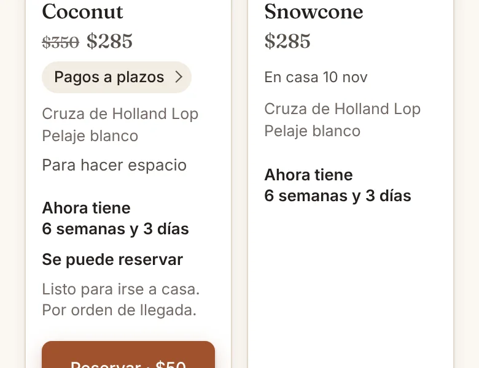
Después
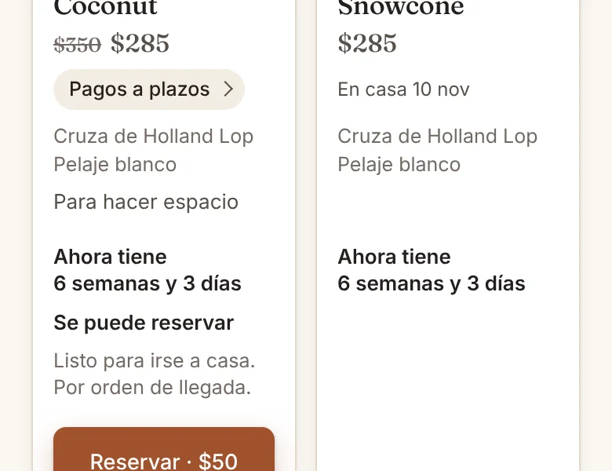
Cada camada que viene pronto dice su raza en su foto.
La etiqueta que decía De raza pura en casi todas las tarjetas ahora dice la raza, Holland Lop o Netherland Dwarf; una cruza conserva sus dos razas. La línea bajo la edad dice De raza pura o Cruza.
Antes
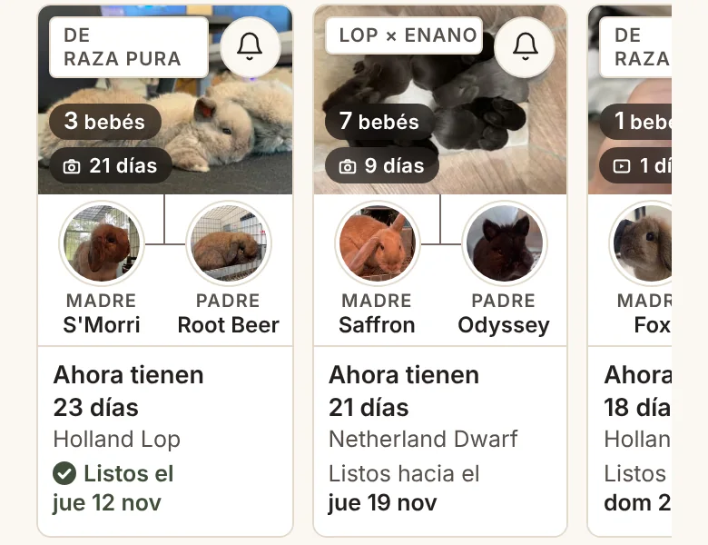
Después
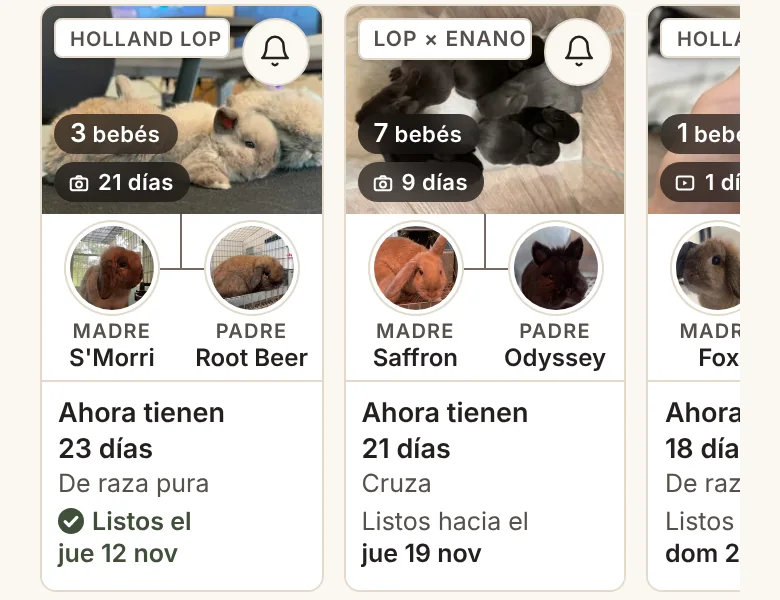
Cada camada con el nombre de sus padres, y los conejos pagándose a plazos en una pestaña
Versión del sitio 2026.11.10c
Cada camada lleva el nombre de sus padres, con sus fotos.
El título dice "Saffron y Odyssey" en lugar del día en que nacieron, y las fotos de los dos padres están debajo, cada una lleva a ese padre.
Antes
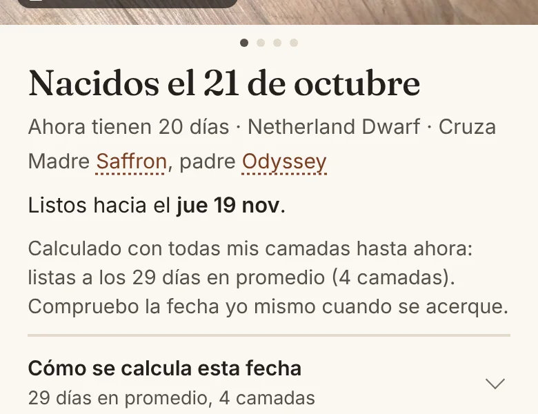
Después
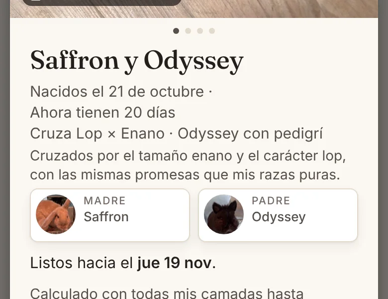
En un teléfono, la ficha de una camada flota sobre la página.
Deja un margen por todos los lados y esquinas redondeadas también abajo, en lugar de llenar la parte de abajo de la pantalla.
Antes
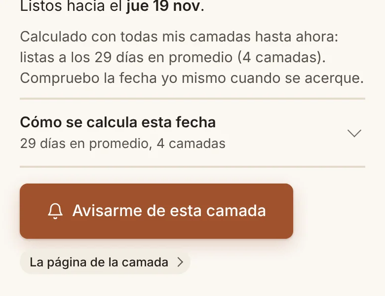
Después
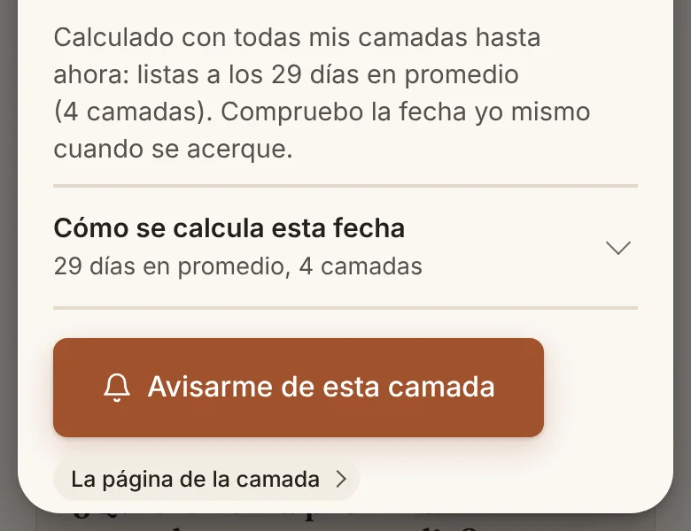
Una cruza dice sus dos razas y por qué se cruzaron.
La tarjeta dice Lop × Enano en lugar de Cruza. Su ficha y la página de camadas agregan una línea corta: cruzados por el tamaño enano y el carácter lop, cuál de los padres tiene pedigrí, y las mismas promesas que las razas puras.
Antes
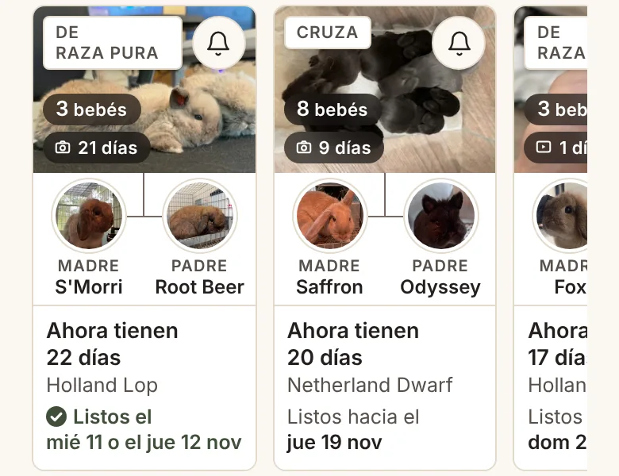
Después
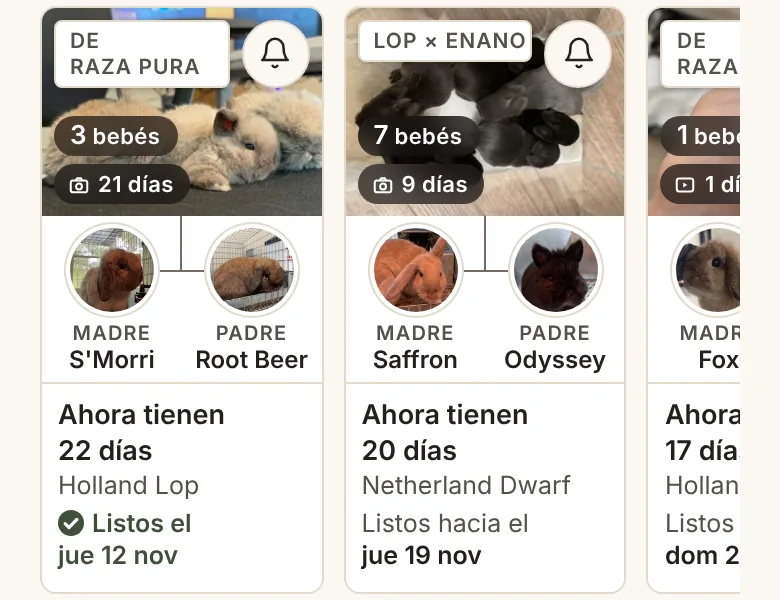
Los conejos pagándose a plazos están en una pestaña.
Cerrada, es una fila corta con sus caras y cuántos son. Al tocarla se abre una fila por conejo, con lo pagado y su barra, y cada fila abre la ficha de ese conejo.
AntesDespués
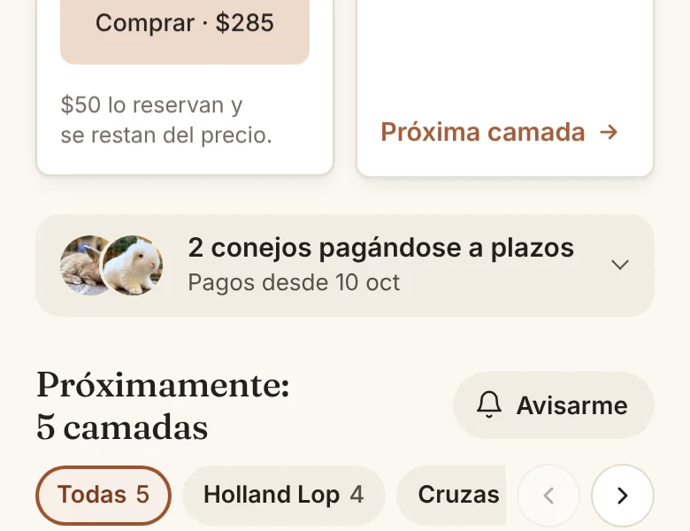
La camada de S'Morri y Root Beer estará lista el jueves 12 de noviembre.
La tarjeta decía miércoles o jueves; ahora da un solo día, que comprobé yo mismo hoy.
AntesDespués
Cada camada que viene pronto cuenta los bebés vivos y da su día.
Donde se perdió un bebé, la camada lo dice ("Nacieron cuatro, viven tres"), y cada número del sitio es el de los vivos. "Próximamente" pasó a ser el día en que estarán listos: el mío donde lo comprobé, el estimado en los demás.
Antes
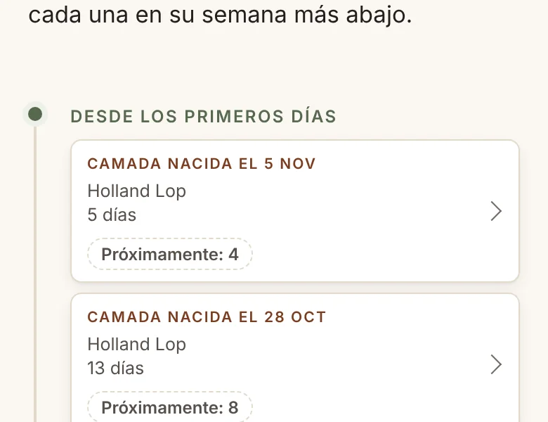
Después
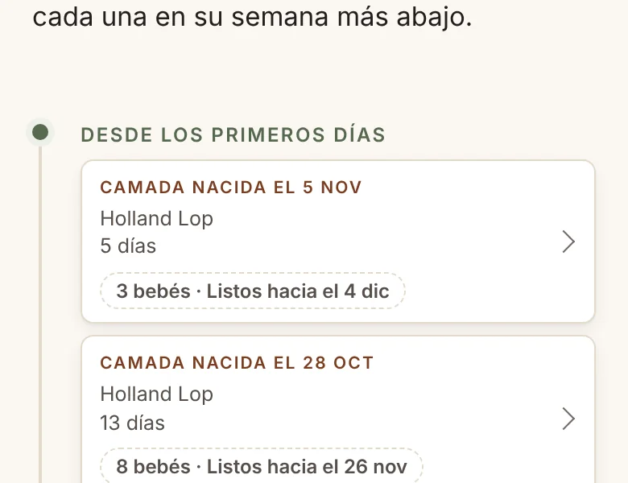
Cada fila de tarjetas a la misma altura, y cuántos bebés tiene cada camada
Versión del sitio 2026.11.10b
Cada camada que viene pronto dice cuántos bebés tiene.
El número está en la foto de la camada, frente a la edad de la foto, así que no agrega nada a la tarjeta y está en el mismo lugar en todas.
Antes
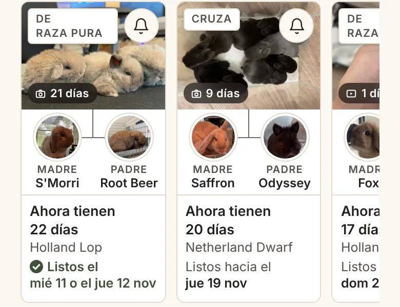
Después
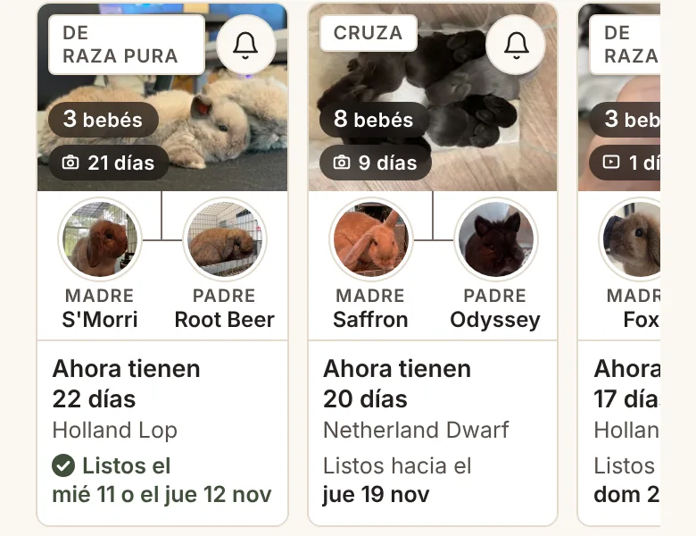
La pareja en un solo plan de pagos es una tarjeta compacta.
Las fotos de los dos conejos quedan pequeñas junto a la marca Pagando, y cada uno conserva su barra de lo pagado, así que el plan se lee de un vistazo en menos espacio.
Antes
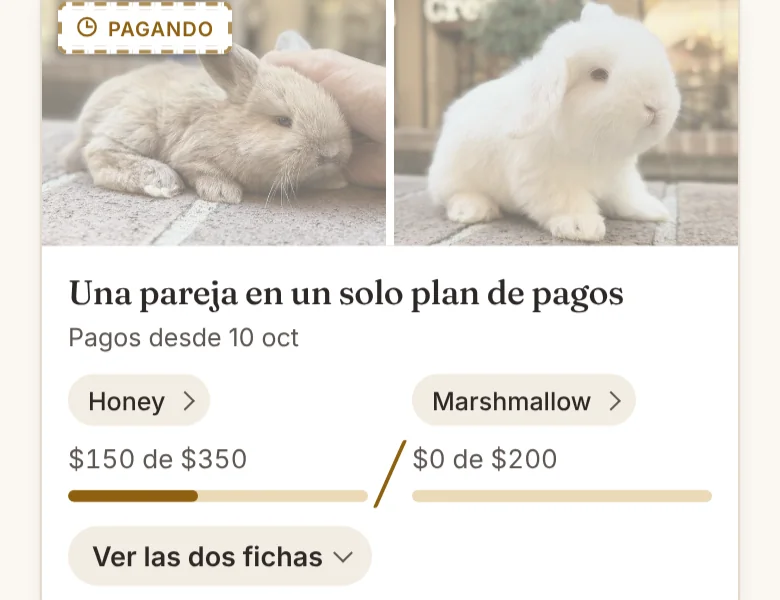
Después
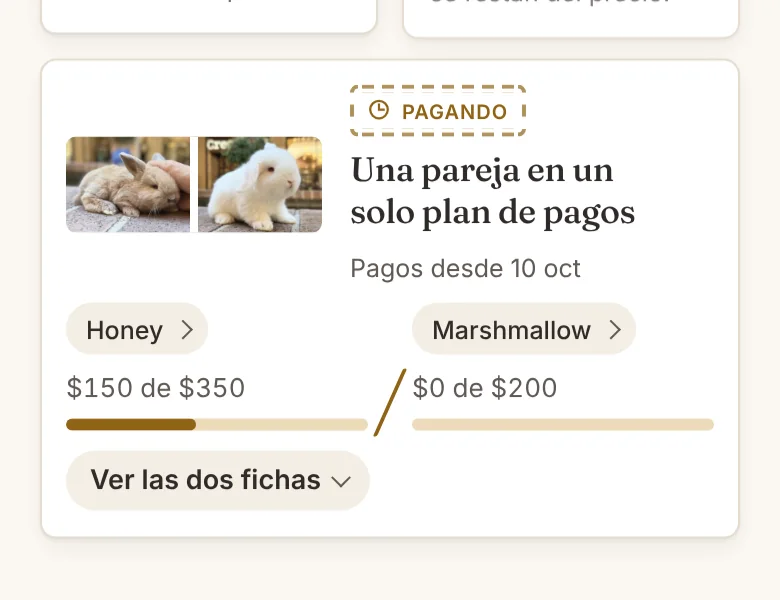
En la página de camadas, cada dato empieza a la misma altura.
Cada padre tiene su propia línea en todas las tarjetas, y la raza, los padres y el día en que estarán listos empiezan a la misma altura en toda la fila, para comparar dos camadas de un vistazo.
Antes
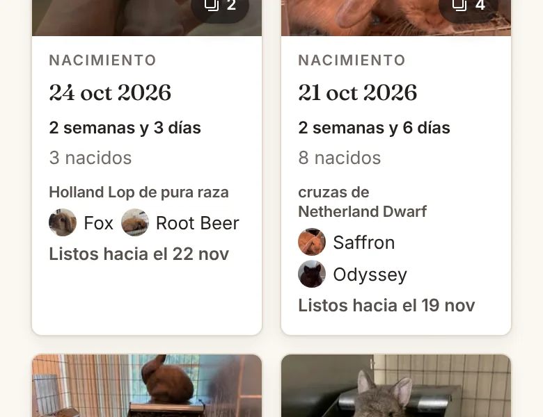
Después
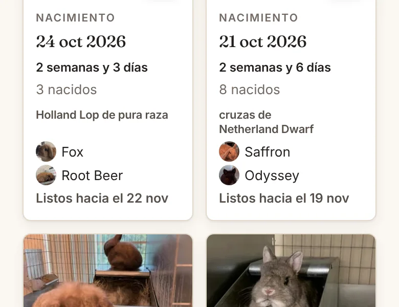
En la fila de conejos, las líneas de cada tarjeta quedan a la misma altura.
Un conejo pagado a plazos tiene una línea más (Liquidado, Pagos desde). Las tarjetas de una fila comparten ahora sus líneas, así que el estado de cada conejo y su enlace a la camada quedan a la misma altura; la tarjeta de al lado deja esa línea vacía.
Antes
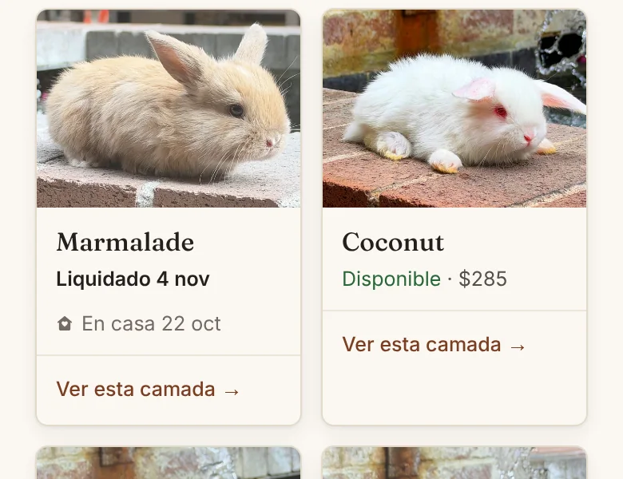
Después
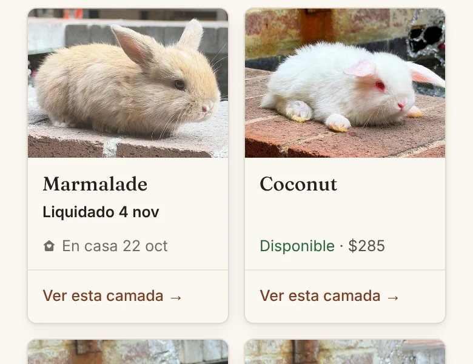
Bajo las fotos de una camada, cada nota empieza a la misma altura.
La línea de la fecha bajo una foto puede ocupar más líneas que la de al lado. Las fotos de una fila comparten ahora sus líneas, así que las notas empiezan a la misma altura.
Antes
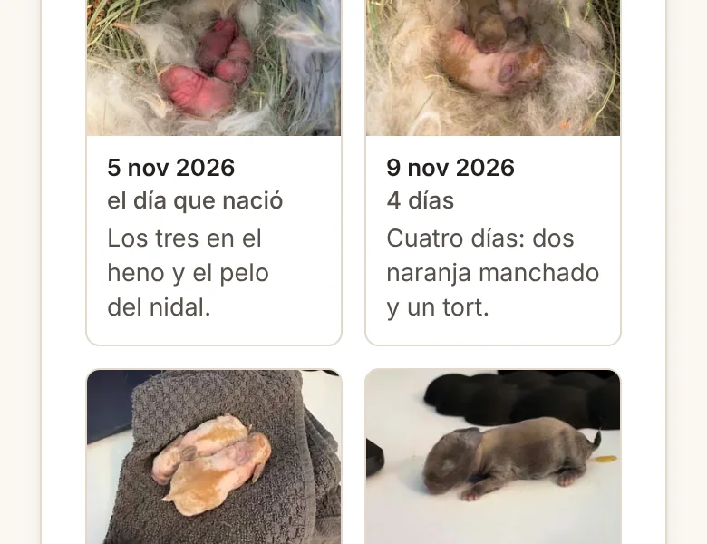
Después
Los dos padres de una camada empiezan a la misma altura.
Cuando la tarjeta de un padre tiene una línea más (un número de oreja, Con pedigrí), las palabras de las dos tarjetas empiezan ahora arriba, así que Madre y Padre, los nombres y las razas quedan a la misma altura. El árbol familiar de un padre hace lo mismo con sus dos lados.
Antes
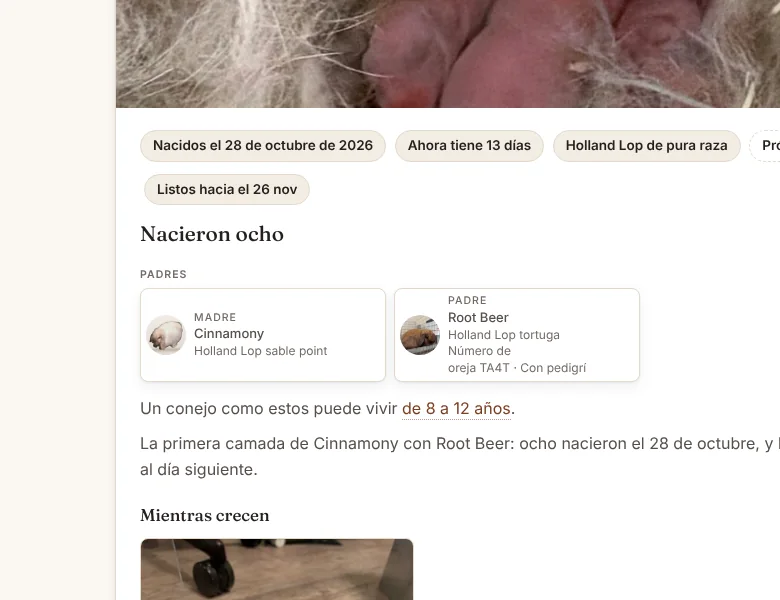
Después
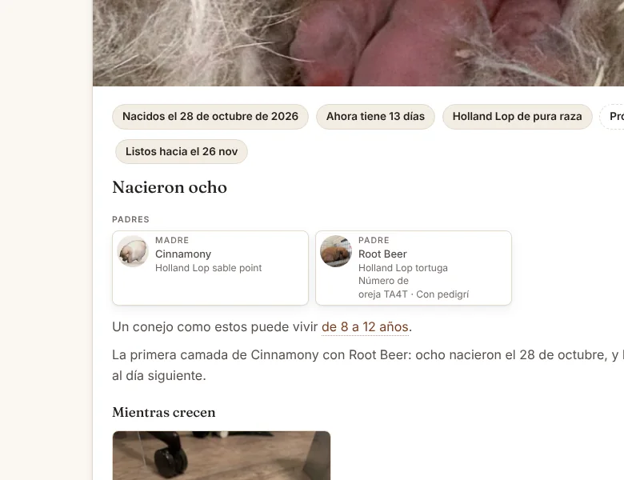
En una pantalla más ancha, las etapas de la rutina quedan alineadas.
La etiqueta, el título y el texto de cada etapa empiezan a la misma altura, y las camadas que hoy están en cada etapa quedan en una fila bajo el texto. En un teléfono las etapas siguen una bajo la otra, como antes.
Antes
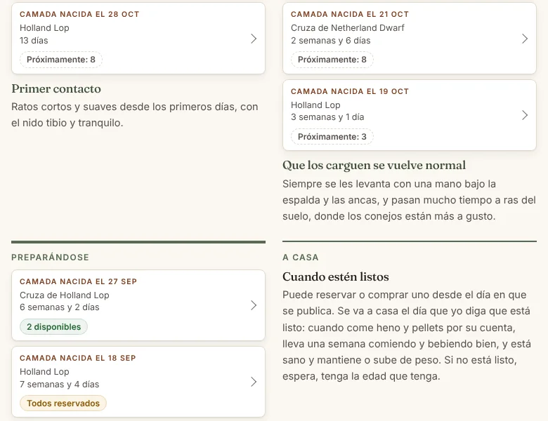
Después
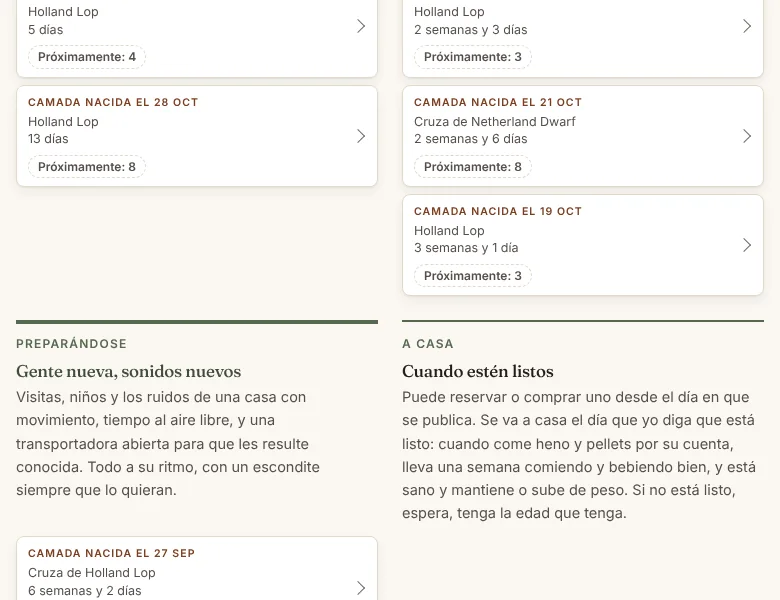
Las líneas de cada camada, a la misma altura
Versión del sitio 2026.11.10a
En las camadas próximas, cada tarjeta se lee ahora en las mismas líneas.
La edad, la raza y el día en que estarán listos empiezan a la misma altura en cada tarjeta, para leer la fila de un vistazo. La edad va en días hasta las ocho semanas, como ya la dice cada foto.
Antes
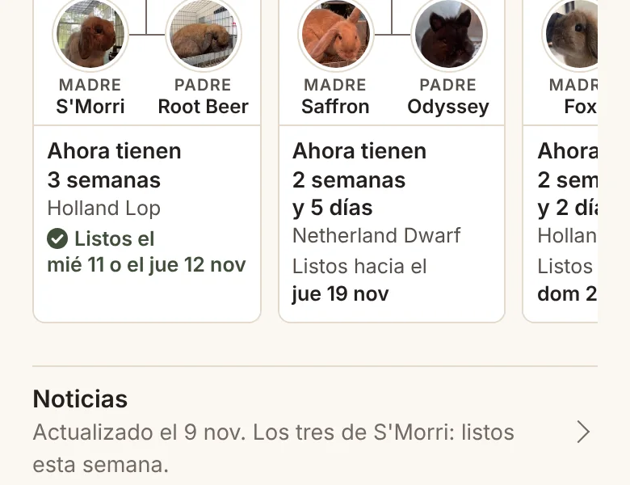
Después
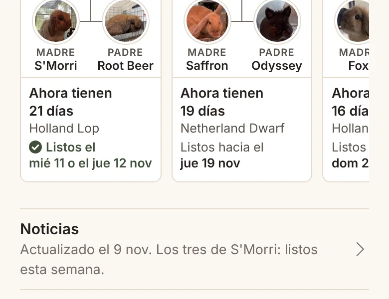
Una solicitud enviada por mensaje también llega a mi correo
Versión del sitio 2026.11.09e
Una solicitud que envíe por mensaje también llega a mi correo.
Cuando toca Enviar por mensaje en la solicitud de un conejo, las mismas palabras me llegan por correo como copia, para que su solicitud no se pierda si el mensaje nunca llega. La línea bajo el botón lo dice antes de que toque, y los términos también. Enviar por correo ya llega a mi buzón.
Antes
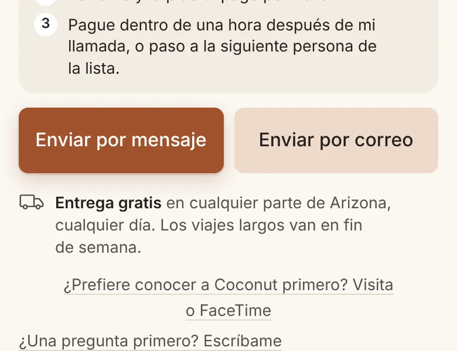
Después
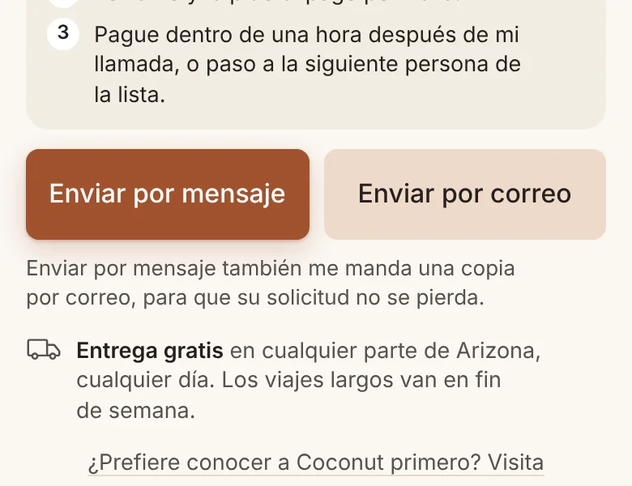
Cuándo debería estar lista cada camada, según mis propias camadas
Versión del sitio 2026.11.09d
Cada camada próxima muestra cuándo debería estar lista.
La fecha de cada camada que crece se calcula con mis propias camadas: la edad promedio a la que estuvieron listas para irse a casa, la de su propia línea cuando han terminado dos de sus camadas, y la de todas mis camadas hasta entonces. Dice que es una proyección hasta que yo la compruebe; entonces una marca verde lo dice.
Antes
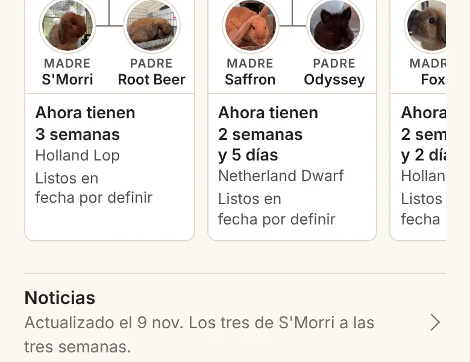
Después
Cómo se calcula cada fecha está a un toque.
Bajo la fecha de una camada, Cómo se calcula esta fecha muestra el cálculo en dos líneas, el promedio y el día de nacimiento más esos días, y un segundo toque muestra cada camada que cuenta. Todo se abre donde está, así que nada lo saca de la página.
Antes
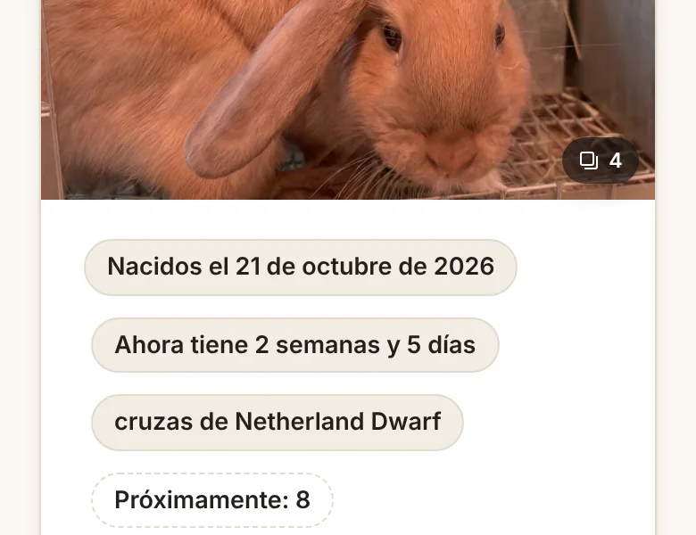
Después
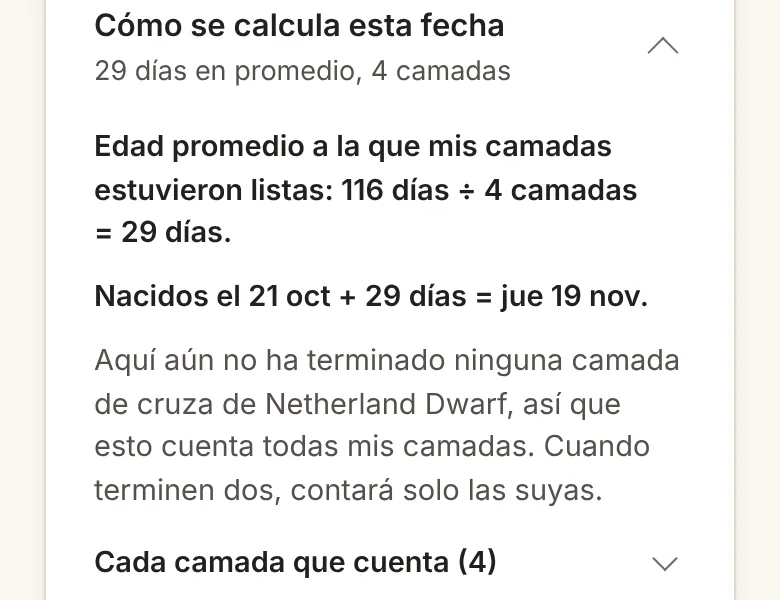
El conteo privado distingue la visita de una persona de una automatizada.
Ahora también guarda más o menos cuánto tiempo estuvo una página en pantalla, si algo la tocó, y si el navegador dice ser un bot o vino de la red de una empresa de alojamiento web: un sí o un no cada uno, nunca un nombre ni una dirección. Para no contar dos veces a un mismo visitante, su navegador recuerda el día en que se contó por última vez, y esa fecha se queda en su dispositivo. Sigue sin cookies y sin identificador, y un navegador que pide no ser rastreado no se cuenta en absoluto.
Antes
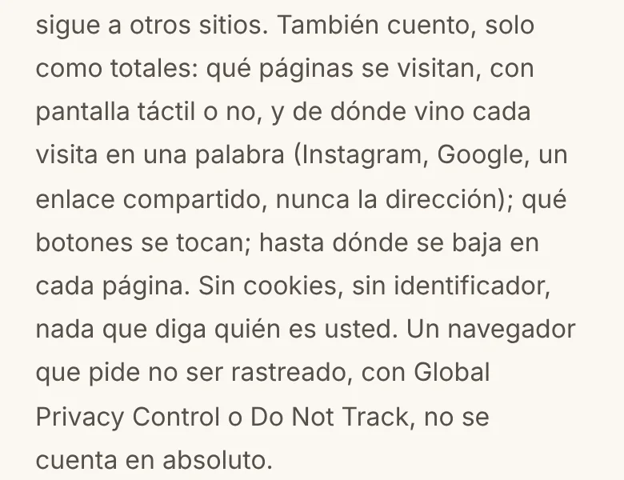
Después
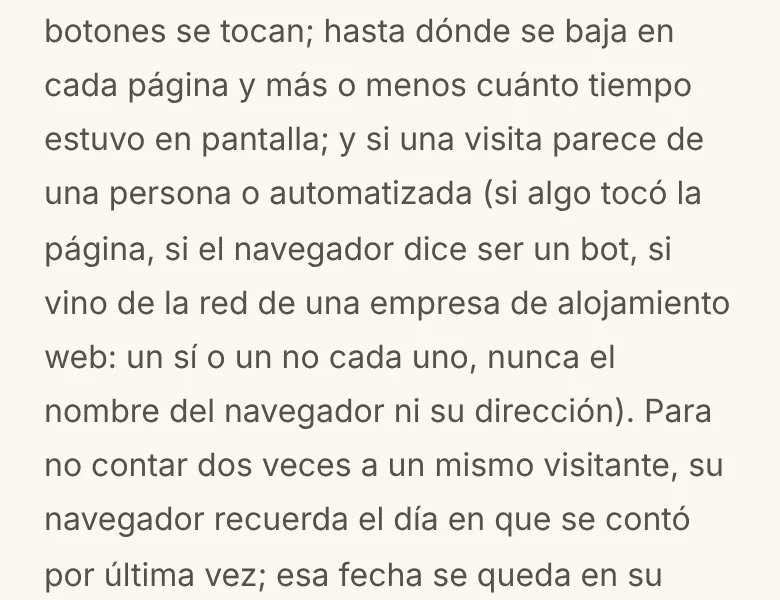
Un borde sencillo en las camadas próximas
Versión del sitio 2026.11.09c
Las camadas próximas tienen un borde sencillo.
Cada tarjeta tenía un borde de guiones, y una fila de ellas apartaba la vista de lo que dicen las tarjetas. Ahora tienen la línea fina de todas las demás tarjetas del sitio. El título sigue diciendo que son camadas próximas, y también una tarjeta sin precio.
Antes
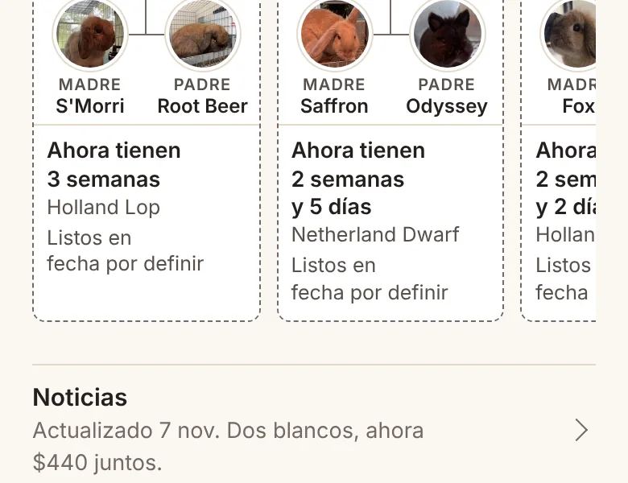
Después
Los padres en cada camada, y cuándo puede irse a casa
Versión del sitio 2026.11.09b
Cada camada próxima muestra a su madre y a su padre.
Debajo de la foto de cada camada en la portada están las caras de su madre y de su padre, con Madre y Padre y sus nombres, para que vea cómo serán los bebés. Cada cara abre la página de ese padre o esa madre, con sus fotos y sus camadas. Cada foto dice además qué edad tenían en ella, y la tarjeta dice qué edad tienen ahora.
Antes
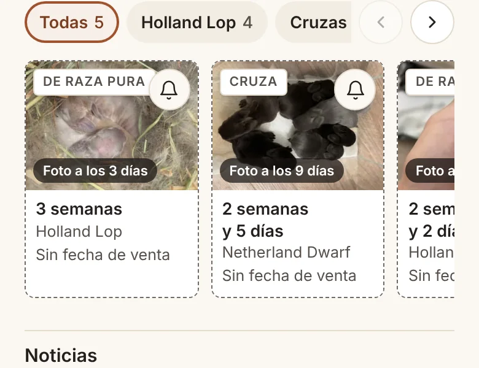
Después
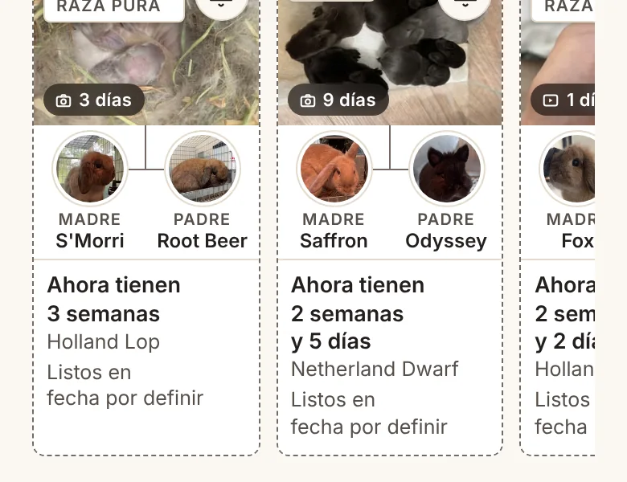
Cada camada muestra su fecha para irse, y la conserva.
Una camada que aún crece muestra el día que yo le doy: Listos hacia el, hasta dos días antes, y luego Listos el. Mientras no le doy uno, dice Listos en fecha por definir; nunca se calcula por la edad. Una camada terminada conserva su fecha confirmada: el día que el primero se fue a casa.
Antes
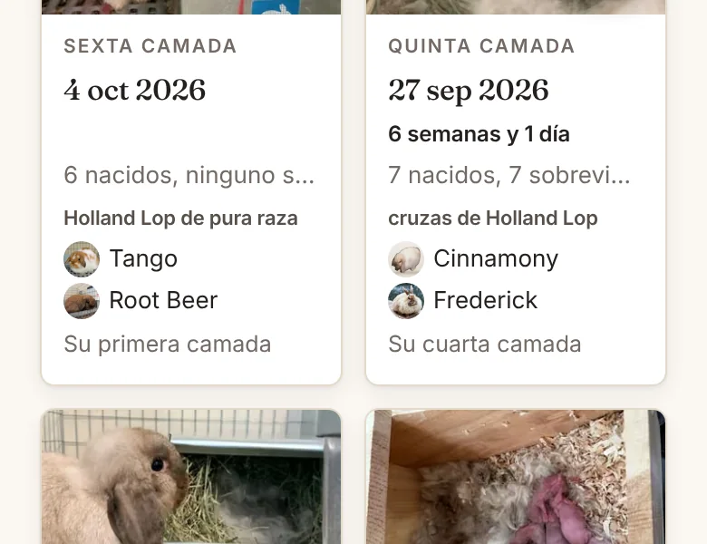
Después
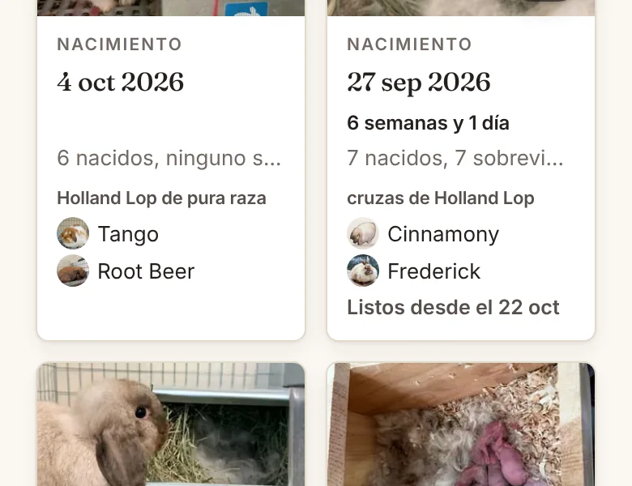
Cada camada se nombra por el día en que nació, sin números.
La fecha en la foto de cada camada ahora dice Nacimiento encima. Ya no hay números: ni Duodécima camada sobre una fecha, ni Su segunda camada bajo los padres, y la portada nombra cada camada por su fecha de nacimiento. Buscar una camada, en la página de camadas, todavía la encuentra por su número.
Antes
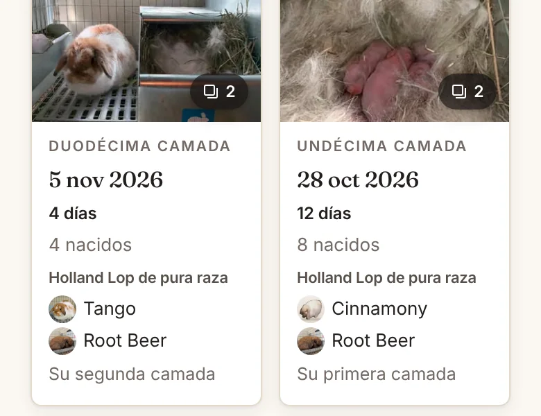
Después
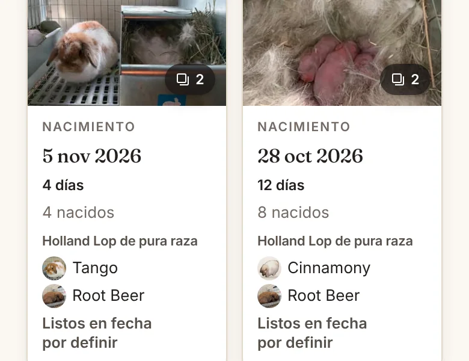
Las próximas camadas
Versión del sitio 2026.11.09a
Las próximas camadas aparecen ahora tras los conejos a la venta.
Cada camada que ya nació y aún no está a la venta tiene una tarjeta pequeña justo después de los conejos a la venta: su foto más reciente, marcada De raza pura o Cruza, su edad, su raza y su fecha de venta, que dice que aún no está fijada mientras no la haya. Cuando la foto es de más de una semana antes, dice qué edad tenían en ella. La mayor va primero. Unos botones muestran solo los Holland Lop, los Netherland Dwarf o las cruzas, cada uno con cuántas hay; uno sin ninguna dice qué hay en su lugar. Una tarjeta de lo que viene tiene el borde punteado, para que nunca parezca un conejo a la venta, y la fila termina en la página de camadas.
AntesDespués
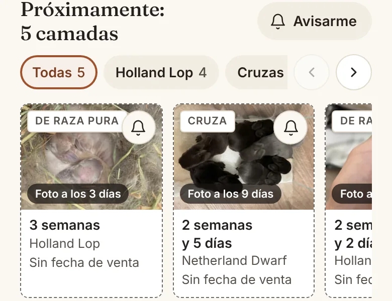
Al tocar una camada se abre sobre la página, con sus fotos y sus padres.
Al tocar una tarjeta, esa camada se abre sobre la página: todas sus fotos, la más reciente primero, su edad, su raza y su tipo, su madre y su padre a un toque, su fecha de venta y por qué aún no está fijada. La X, un toque fuera o Escape la cierran, y la página y las tarjetas quedan donde estaban. «Avisarme de esta camada» y «La página de la camada» llevan más allá.
Antes
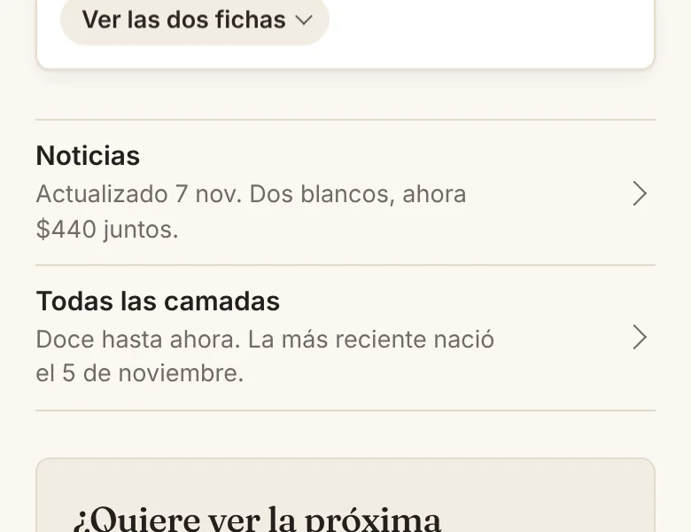
Después
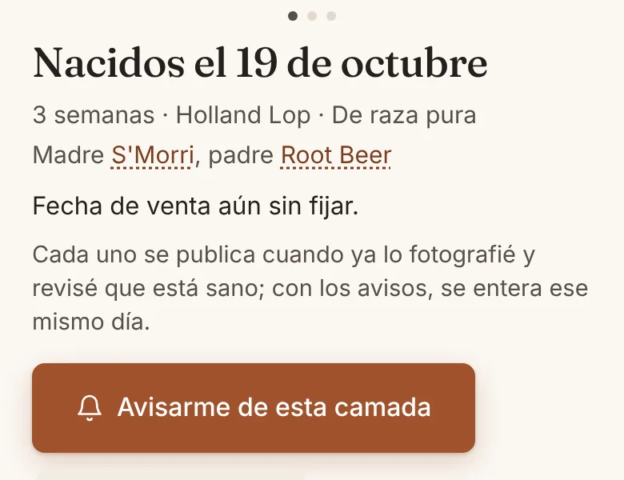
Avisos de una camada o de todas, y nada de lo que elija se pierde.
La campana de cada tarjeta abre los avisos de camadas con esa camada ya marcada: las mismas opciones de la lista de espera, las camadas que quiera o todas, fotos nuevas mientras crecen si las quiere, y su correo. Todas las camadas guarda debajo las que ya eligió, y nada de lo que elija se borra nunca: ciérrelo y ábralo otra vez, o recargue la página, y todo sigue ahí. Ya apuntado, las campanas de sus camadas se ven rellenas.
Antes
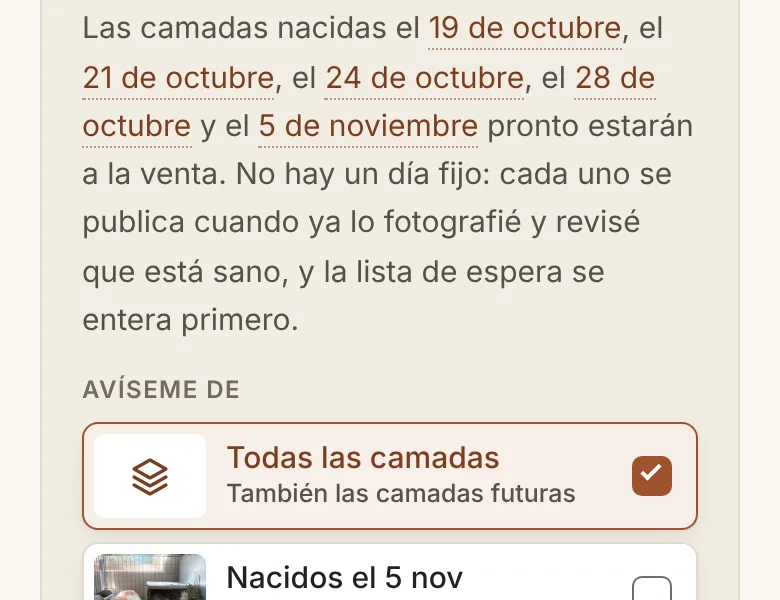
Después
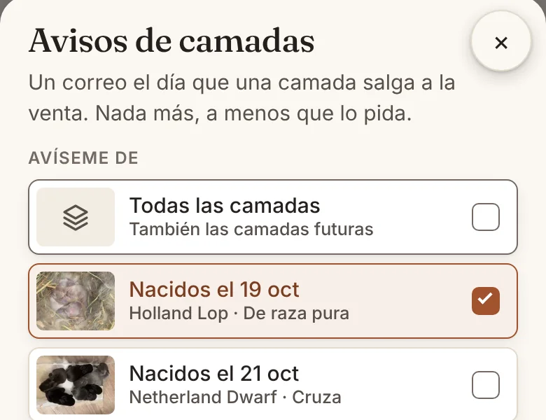
Nada de lo elegido se pierde
Versión del sitio 2026.11.08k
La (i) junto a un conejo abre una ventanita; nada de lo elegido se pierde.
En la caja de parejas de un anuncio, la pequeña (i) junto a cada conejo abría el anuncio de ese conejo en lugar del que estaba viendo, y el conejo elegido, el interruptor para militares y su lugar en la página se perdían. Ahora abre una ventanita sobre la caja, con las fotos del conejo y una línea sobre él. La X, un toque fuera de ella o Escape la cierran, y todo queda donde lo dejó. «El anuncio de Snowcone» sigue abriendo el anuncio completo, y Atrás devuelve la caja tal como estaba.
Antes
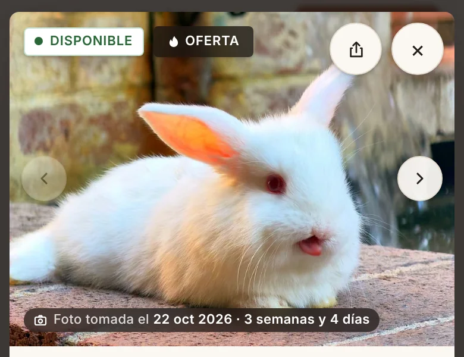
Después
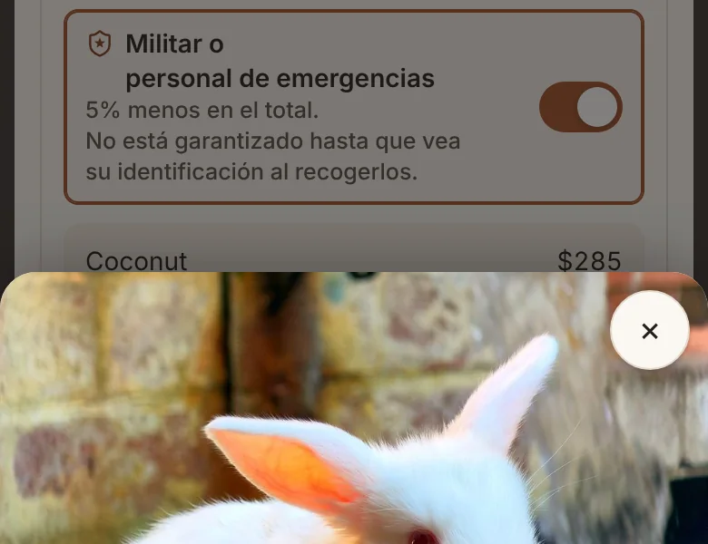
Cada total con descuento lleva su interruptor del 5% para militares.
El 5% para militares y personal de emergencias tenía su interruptor en la caja de parejas y en una solicitud, pero no en el anuncio de los dos ni en su pantalla de Confirmar, donde se muestra el total de los dos. Ahora el interruptor está también sobre ese recibo. Al moverlo, la línea del 5%, Usted paga y la cantidad del botón Comprar o Confirmar cambian al instante; la solicitud abierta desde ahí ya tiene el mismo interruptor puesto, y al revés.
Antes
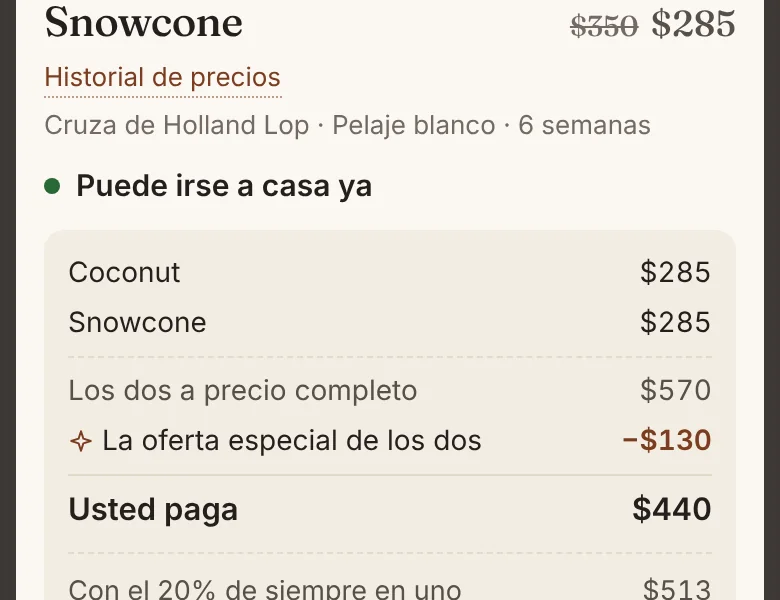
Después
Las filas del anuncio, en líneas parejas
Versión del sitio 2026.11.08j
Las filas del anuncio, en líneas parejas: nunca dos o tres palabras sueltas.
En un teléfono, dos de las filas bajo el precio de un anuncio terminaban en español en una última línea corta: «de emergencias» y «fin de semana». Ahora cada fila reparte sus palabras por igual entre sus líneas, así que la última nunca queda corta, en los dos idiomas y los dos navegadores, en cada ancho de 320 a 1200. Las filas en inglés ya caben en una línea.
AntesDespués
La calculadora de parejas
Versión del sitio 2026.11.08i
La caja de parejas calcula: toque un conejo y vea el precio de los dos.
Cada otro conejo a la venta es una ficha con su cara y su nombre, el destello en una oferta especial, y sin precios hasta tocar uno. Al tocarlo aparece el mismo recibo que en el anuncio de los dos: los dos precios, los dos a precio completo, la oferta especial o el 20% en el que cuesta menos, lo que paga y lo que ahorra. Seguir abre el anuncio de los dos. Todo pasa dentro de la caja, sin ventanas emergentes.
AntesDespués
Una pequeña (i) junto a cada conejo abre su propio anuncio.
La ficha elige el conejo para la calculadora; la (i) a su lado lleva a ese conejo, a sus fotos y su historia.
AntesDespués
Un escudo con estrella marca el 5% para militares y personal de emergencias.
Así como los anillos marcan el 20% y el destello una oferta especial, el escudo con una estrella marca el 5% para militares y personal de emergencias: en la fila del anuncio, en el interruptor de una solicitud y de la caja de parejas, y en la línea del recibo.
AntesDespués
Un vistazo rápido a cada pareja
Versión del sitio 2026.11.08h
El precio de cada pareja es una tabla rápida.
Cada otro conejo a la venta es una fila: su precio, el precio de este conejo y los dos juntos, con lo que se ahorra. El 20% aparece en el que cuesta menos, tachado en ladrillo con los anillos; la fila de una oferta especial va sombreada, su ahorro con el destello. Cada fila dice lo que se ahorra con los dos. Cuatro a la vez, con botones para ver los demás, y cada conejo abre el anuncio de los dos.
AntesDespués
La tabla también tiene el interruptor para militares.
Encendido, cada total de la tabla baja 5%, además del 20% o de una oferta especial, y una solicitud abierta después empieza con su interruptor encendido. Dice que el 5% no está garantizado hasta ver la identificación al recogerlo.
AntesDespués
Precios de pareja que muestran a los dos conejos
Versión del sitio 2026.11.08g
El precio de cada pareja muestra a los dos conejos.
Cada fila nombraba solo al otro conejo junto al precio de los dos, así que parecía el precio de ese conejo solo. Ahora cada fila muestra las dos caras y los dos nombres, abre el anuncio de los dos y dice bajo el ahorro de dónde viene: una oferta especial, o el 20% de siempre.
AntesDespués
Al elegir un segundo conejo se dice de dónde viene su precio.
La barra decía que el segundo tiene 20% de descuento, pero Coconut y Snowcone juntos son una oferta especial, y el 20% siempre es para el que cuesta menos. Ahora la barra lo dice, y la línea bajo el botón de cada tarjeta nombra a los dos conejos y la oferta especial, o cuál lleva el 20%.
AntesDespués
El botón de la oferta especial vuelve a su tamaño de siempre.
En los anuncios de Coconut y Snowcone, el botón de los dos dibujaba su destello tan ancho como el botón desde el 7 de noviembre. Ahora tiene el tamaño de las demás marcas del sitio.
AntesDespués
Un interruptor al pagar descuenta 5% a militares y personal de emergencias.
En una solicitud para reservar o comprar, el interruptor descuenta 5% de cada precio, además de una oferta especial o el 20%, como dicen los términos. Dice que el 5% se confirma cuando se ve la identificación al recogerlo y que no está garantizado hasta entonces, y el mensaje que escribe dice lo mismo.
AntesDespués
El descuento para militares y personal de emergencias ahora es de 5%.
Era de 10%. Sigue sirviendo para cualquier conejo y para el hospedaje, se suma a cualquier otra oferta y se confirma al ver la identificación al recogerlo.
AntesDespués
El “con Coconut” de una tarjeta abre a Coconut.
En una tarjeta con oferta especial, el nombre del otro conejo ahora es un enlace a ese conejo, como el nombre de cada conejo en el sitio.
AntesDespués
El cumpleaños de Frederick
Versión del sitio 2026.11.08f
El cumpleaños de Frederick está en su ficha.
Frederick, el padre de las primeras camadas, nació el 30 de octubre de 2025, según la propia respuesta del vendedor. Su ficha ahora muestra el día en que nació y su edad, como la de los demás reproductores.
AntesDespués
Un enlace de las Noticias que dice adónde lleva
Versión del sitio 2026.11.08e
Un enlace de las Noticias dice adónde lleva.
La noticia del 22 de septiembre, “Por qué ocho semanas”, terminaba con un enlace a la respuesta sobre irse a casa que decía “Por qué mi meta son ocho”, y esa respuesta ya no lo dice. El enlace ahora usa la pregunta de la propia respuesta.
AntesDespués
Conozca a los dos juntos
Versión del sitio 2026.11.08d
Conozca a los dos juntos.
Con dos conejos elegidos, una visita, una videollamada o fotos nuevas ahora son para los dos: la solicitud pregunta “¿Prefiere conocerlos primero?” y la ficha de los dos dice “Conózcalos primero, sin compromiso”.
AntesDespués
Una sola respuesta sobre irse a casa.
La respuesta a “¿Cuándo me puedo llevar uno a casa?” ya no cita guías que dicen ocho semanas mientras las fichas dicen listo ya. Dice lo que lo decide aquí: el día que yo digo que está listo, después de la misma prueba cada vez.
AntesDespués
Nada se queda resaltado después de tocarlo
Versión del sitio 2026.11.08c
Nada se queda resaltado después de tocarlo.
En un teléfono, el botón que se tocaba se quedaba con el color que tiene al pasar el ratón por encima, como el aro que quedaba alrededor de Compartir después de compartir. Ahora esos colores solo aparecen con un ratón, en todas las páginas, y al cerrar algo ya no queda un color ni un recuadro en lo que lo abrió.
AntesDespués
Compartir la ficha de los dos comparte a los dos
Versión del sitio 2026.11.08b
Compartir la ficha de los dos comparte a los dos conejos.
Su botón Compartir enviaba el enlace del primer conejo, así que quien lo recibía veía solo a ese conejo. Ahora envía un enlace con las dos fotos lado a lado y los dos nombres, que abre la ficha de los dos. El enlace compartido de cada conejo también dice su propia raza.
AntesDespués
Las filas de arriba se abren sin saltos, ¿Se lleva dos? ofrece a cada uno, y ningún recuadro al tocar
Versión del sitio 2026.11.08a
Las cuatro filas de arriba se abren sin saltos.
Cada fila se abre justo debajo de sí misma y se queda donde la tocó. Si sus puntos fueran a quedar bajo el botón Inicio o más abajo de la pantalla, la página se desliza solo lo necesario para mostrarlos todos. Cada fila se abre y se cierra con su propio toque.
AntesDespués
¿Se lleva dos? ofrece a cada uno de los dos por separado.
Cuando la solicitud se abre con dos conejos, ¿Se lleva dos? ofrece Los dos, Solo Coconut y Solo Snowcone, cada uno con su precio, para los dos que estén en la ficha. Al elegir uno, toda la solicitud pasa a ese conejo, y la fila que tocó se queda en su sitio.
AntesDespués
Ningún recuadro al tocar.
En un teléfono, al cerrar algo quedaba un recuadro alrededor del botón que lo abrió. El recuadro sirve para que quien usa un teclado sepa dónde está, así que ahora solo aparece cuando se usa un teclado. Los lectores de pantalla siguen llegando al mismo lugar.
AntesDespués
Las filas de arriba se abren ahí mismo, las respuestas vienen a usted, y no pierde lo que eligió
Versión del sitio 2026.11.07g
Las cuatro filas de arriba se abren ahí mismo.
Lo que paga, Conózcalos antes de pagar, Bienvenido si es su primer conejo y 20% de descuento en un segundo conejo se abren justo bajo la fila, con los puntos principales de la respuesta y La respuesta completa al final. Nada salta al final de la página.
AntesDespués
Las respuestas se abren sobre el anuncio, así no pierde lo que eligió.
En un anuncio, La respuesta completa, Cómo se paga y los demás enlaces a respuestas se abren en una hoja encima. Una respuesta enlazada se abre en la misma hoja con forma de volver, y al cerrarla el anuncio queda como estaba. Entrega gratis en todo el estado, arriba, se abre igual.
AntesDespués
Con dos elegidos, un enlace que sale pregunta primero.
En el anuncio de los dos, un enlace que los dejaría pregunta: ¿Dejar a Coconut y Snowcone por ahora? Siguen elegidos. Pregunta una vez; Quedarme aquí deja todo como estaba.
AntesDespués
Una forma de volver a donde estaba.
Al dejar a los dos por otro conejo, su anuncio tiene Volver a Coconut y Snowcone sobre el nombre. Al dejar un anuncio por otra parte de la página, un pequeño botón Volver a espera abajo a la izquierda.
AntesDespués
Cuando solo dos conejos están en venta, el lápiz simplemente lo dice
Versión del sitio 2026.11.07f
Cuando solo dos conejos están en venta, el lápiz simplemente lo dice.
En el anuncio de los dos, un lápiz ofrece cambiar un conejo. Cuando esos dos son los únicos conejos en venta, no hay otro para cambiar, así que ya no ofrece opciones: dice que son los únicos dos, con un solo botón, Entendido.
AntesDespués
Sin hueco bajo el nombre del conejo, un lápiz para cambiar un conejo, e Historial de precios queda a la vista
Versión del sitio 2026.11.07e
Sin espacio vacío bajo el nombre del conejo.
Historial de precios estaba bajo el precio, así que la fila del nombre medía dos líneas y dejaba un hueco bajo el nombre. Ahora está bajo el nombre y el precio queda solo, en cualquier tamaño de pantalla.
AntesDespués
Un lápiz en cada conejo para cambiarlo, y pregunta primero.
En el anuncio de los dos, cada foto redonda tiene un lápiz. Pregunta antes de que nada se mueva: cambiar ese conejo por otro, o quedarse con él. Cuando no hay otro conejo en venta, lo dice en lugar de salir de la página.
AntesDespués
Historial de precios se desliza hasta las fechas y las muestra completas.
Al tocar Historial de precios se abre Lo que paga y sube bajo la parte de arriba del anuncio, con las fechas en el centro de la pantalla y un breve brillo, en lugar de quedar abajo detrás de los botones.
AntesDespués
La X del vistazo, como todas las demás, también en modo oscuro.
La X del vistazo de cerca de un conejo tenía un fondo claro que la ocultaba en modo oscuro. Ahora tiene el mismo aspecto que la X del anuncio.
AntesDespués
Coconut y Snowcone ahora $440 juntos, el ahorro como un recibo, y un vistazo de cerca a cada conejo
Versión del sitio 2026.11.07d
Coconut y Snowcone juntos: $440, antes $500.
La oferta especial de los dos blancos ahora es de $440 por ambos, $130 menos que sus $570. Sus botones, tarjetas y anuncios muestran el nuevo precio.
AntesDespués
El ahorro por los dos se lee como un recibo.
Cada conejo a su propio precio, los dos a precio completo, el único descuento en su propia línea, y lo que paga. Con una oferta especial, dos líneas más muestran cuánto costaría con el 20% de siempre en uno y cuánto más ahorra la oferta especial.
AntesDespués
En el anuncio de los dos, toque un conejo para verlo de cerca.
Toque cualquiera de las fotos redondas y ese conejo se abre en una hoja sobre el anuncio: sus fotos para deslizar, su precio, su raza, color y edad, y sus propias palabras. La X le devuelve a los dos.
AntesDespués
El anuncio de los dos muestra a los dos conejos; espacio bajo el encabezado al elegir
Versión del sitio 2026.11.07c
El anuncio de los dos muestra a los dos conejos arriba.
En lugar de la foto de un conejo, el anuncio de los dos muestra a ambos en fotos redondas lado a lado, los anillos o la marca de la oferta especial entre ellos, y cada nombre con su precio. El que lleva el 20% muestra su precio tachado, su nuevo precio y 20% menos.
AntesDespués
Mientras elige un segundo conejo, la barra tiene espacio bajo el encabezado.
La barra que dice para quién es el segundo conejo estaba pegada al encabezado. Ahora tiene espacio encima.
AntesDespués
Con una oferta especial, el desglose dice cuánto habría sido el 20%.
Coconut y Snowcone tienen una oferta especial juntos, así que ninguno lleva el 20% de siempre. Bajo Juntos ahora dice: Oferta especial, $70 menos. El 20% en uno serían $57.
AntesDespués
Al elegir un segundo conejo: el camino de vuelta apunta hacia atrás, y el ahorro se calcula
Versión del sitio 2026.11.07b
La salida del selector es Volver al primer conejo, arriba a la izquierda.
Mientras elige un segundo conejo, lo primero en la barra es Volver a Coconut, apuntando a la izquierda, para que quede claro que le lleva de vuelta al anuncio de donde vino.
AntesDespués
Al confirmar un segundo conejo, el ahorro se calcula conejo por conejo.
Cada conejo tiene su propia línea con su precio. El que cuesta menos muestra su precio tachado y su precio con 20% de descuento; si los dos cuestan lo mismo, el segundo. Debajo, Juntos muestra los dos precios sumados, tachados, junto a lo que paga, y cuánto ahorra. Una oferta especial muestra los dos conejos a precio completo y su propio ahorro.
AntesDespués
Llevarse dos: elija el segundo entre los propios conejos, y vea a los dos en una sola ficha
Versión del sitio 2026.11.07a
Dos botones bajo el precio: la oferta especial y 20% menos en el segundo.
Con otro conejo en venta, cada ficha ofrece Un segundo conejo · 20% menos. Cuando dos conejos tienen un precio especial juntos, un segundo botón los nombra con ese precio y lleva la marca de la oferta. Donde aparece un precio por dos, la suma de los dos precios individuales va tachada al lado, para que el ahorro se vea.
AntesDespués
Elija el segundo conejo entre los propios conejos.
Un segundo conejo reduce la página a los conejos en venta. Cada tarjeta tiene un botón Elegir con el precio por los dos debajo. Toque uno para leer todo sobre él y luego Confirmar. Mejor no le devuelve.
AntesDespués
En cada tarjeta del selector: Elegir, con el precio por los dos debajo.
Elegir a Snowcone está donde van los botones de la tarjeta, y debajo los dos precios individuales sumados aparecen tachados junto al precio por los dos. La primera versión de este botón, en línea de 10:26am a 11:20am, apilaba sus palabras en una columna en el teléfono; esto es la corrección.
AntesDespués
Dos conejos en una sola ficha, con el precio de los dos y el depósito por dos.
Tras Confirmar, la ficha de la que vino muestra a los dos juntos: las dos caras, los dos nombres, los dos precios individuales tachados junto al precio de la pareja, El depósito de $100 por los dos, y el pie dice Reservar · $100 y Comprar por los dos. Solo Coconut lo deshace; Cambiar el segundo conejo vuelve a abrir el selector.
AntesDespués
Llevarse dos: la entrada está en la ficha, y la regla en la pantalla de inicio
Versión del sitio 2026.11.06h
La pantalla de inicio dice que el segundo conejo tiene 20% de descuento.
Bajo Conozca a los conejos, la línea ahora termina con la regla: Dos juntos: el segundo tiene 20% de descuento. Cuando dos conejos tienen un precio especial juntos, sus tarjetas también lo dicen.
AntesDespués
Llevarse dos: la entrada está bajo las líneas del dinero de cada ficha.
La ficha mostraba los botones de un solo conejo, y la manera de llevarse dos estaba al pie. Ahora, con otro conejo en venta, un botón nombra a los dos con el precio de ambos, Snowcone y Coconut · $500, y abre la solicitud con ese conejo ya elegido; con más de uno, Dos · el segundo 20% menos abre la solicitud en la pregunta ¿Se lleva dos?, sin elegir nada por usted. Cuando no hay oferta especial con este conejo, la regla tiene su propia línea del dinero.
AntesDespués
La ficha de cada conejo se lee de un vistazo, y lo demás está a un toque
Versión del sitio 2026.11.05a
La ficha de cada conejo se lee de un vistazo.
El nombre y el precio, una línea de datos, listo ya, las tres cosas sobre el dinero, y luego las palabras del conejo, cada una dicha una sola vez. Nada pequeño que tocar hasta que quiera ver más.
AntesDespués
Más sobre cada conejo, a un toque.
Sobre el conejo, Lo que paga, Pagos a plazos y Cómo se compra son filas que se abren en su lugar, y cada una dice en su propia línea lo que tiene dentro: los padres por su nombre, lo que cubre el precio, lo que hacen los botones.
AntesDespués
Conozca al conejo primero, en una línea.
Una visita, una videollamada o fotos nuevas: tres palabras en una frase, cada una abre su propia solicitud. El día de la foto más reciente está en la propia fotografía.
AntesDespués
Dos conejos pueden tener un solo precio juntos, como una oferta especial propia.
Cuando dos conejos tienen un precio especial juntos, la ficha de cada uno lo dice con su propia marca (dos anillos): una línea del dinero, el recuadro de la pareja, la fila de la pareja, Preguntar por los dos y el mensaje que usted envía llevan esa cifra, y dicen que es una oferta especial, no la regla de siempre (el segundo con 20% de descuento).
AntesDespués
Un mes anterior se abre en Noticias, una puerta de vuelta para los dueños, palabras de todos los días en la búsqueda
Versión del sitio 2026.11.01a
Elegir un mes anterior en Noticias lo abre.
Los botones de los meses sobre las semanas llevaban a semanas guardadas bajo Semanas anteriores, así que un toque cambiaba la dirección y no mostraba nada. Ahora la primera semana del mes se abre y aparece en la pantalla, con un toque o desde un enlace guardado. El registro de disponibilidad conserva su propio pliegue.
AntesDespués
Busque una respuesta entiende palabras de todos los días.
Cuando ninguna respuesta tiene las palabras escritas, una palabra de todos los días aún puede nombrar una: «conejo inyecciones» muestra la respuesta sobre la vacunación, y la línea de arriba lo dice, con Usar mis palabras exactas a un toque. Las palabras sobre un conejo enfermo muestran juntas las señales de emergencia y el veterinario.
AntesDespués
¿Ya tiene uno de los míos? Una forma de volver.
Bajo Lo que se lleva a casa, para quien ya tiene uno de mis conejos: un toque lleva a las señales que significan veterinario hoy, y otro al cuidado diario. El pie de página tiene también Ya en casa.
AntesDespués
Listo ya, también en las respuestas.
Dos respuestas todavía decían que un anuncio muestra el día en que está listo en cuanto yo lo fije. Un conejo a la venta está listo ya, salvo que su anuncio muestre un día posterior, como ya dice cada anuncio.
AntesDespués
El anuncio de Pecan ya no pide depósito.
A $40, Pecan se compra en un solo pago, como ya decían su botón y su anuncio, pero la línea de abajo seguía diciendo que un depósito de $50 lo reserva. Ahora esa línea dice que no hay depósito a su precio, y cada conejo de más de $50 conserva su línea del depósito.
AntesDespués
Honey y Marshmallow, un solo plan para la pareja
Versión del sitio 2026.10.31b
Honey y Marshmallow son una sola ficha, con dos medidores.
Marshmallow se fue a casa con el mismo plan de pagos que Honey, así que en la portada los dos son una sola tarjeta: las dos fotos, y dos medidores uno junto al otro con una línea inclinada entre ellos. Lo pagado llena primero los $350 de Honey, después los $200 de Marshmallow: $150 de $350, y $0 de $200. Nunca el día de un pago y nunca un nombre.
AntesDespués
Un toque la abre como una carpeta, con las dos fichas dentro.
Dentro están las tarjetas de Honey y de Marshmallow, tal como eran, y cada una abre su propia ficha con sus fotos, su precio y su registro. No se quitó nada de ninguna de las dos fichas.
AntesDespués
Cada ficha dice que se paga en pareja.
El registro de Marshmallow dice que se fue a casa el 31 de octubre, cuánto se ha pagado de sus $200, y que se paga en pareja con Honey, primero los $350 de Honey; el de Honey dice lo mismo de Marshmallow. Cada nombre lleva con un toque a la otra ficha.
AntesDespués
Coconut encabeza la portada.
Marshmallow la encabezó desde el 27 de septiembre. Ahora que se fue a casa, pasa por la misma regla: el conejo en venta de mayor precio, el primero de la lista, tranquilo sobre el ladrillo sin que nada lo sostenga.
AntesDespués
Vea al conejo como está hoy; los pasos del precio; la barra de pagos
Versión del sitio 2026.10.31a
Pida fotos nuevas, una videollamada o una visita, bajo las fotos de cada conejo.
Las fotos del sitio no siempre son de esta semana, así que cada conejo en venta ahora dice el día de su foto más reciente y ofrece tres opciones: Fotos nuevas, Videollamada y Visita. Cada una le redacta un mensaje de texto o un correo para enviar; yo mismo lo respondo, así que nada queda agendado hasta que le devuelva la llamada.
AntesDespués
Fotos nuevas es una solicitud: las mando cuando esté con el conejo.
Su nombre, un teléfono si prefiere recibirlas por mensaje, y cualquier cosa en particular que quiera ver. Pedirlas no aparta nada: otra persona todavía puede reservar antes.
AntesDespués
Cada precio tachado muestra sus pasos con fecha.
Bajo el motivo de una rebaja, el día en que el conejo se publicó y cada precio desde entonces, para que el primer precio tachado se lea junto a los precios a los que realmente se ofreció. Pecan: publicada el 19 de septiembre a $375; $350 desde el 24 de septiembre; $100 desde el 26 de octubre; $40 desde el 30 de octubre.
AntesDespués
Un plan de pagos muestra cuánto se ha pagado, con una barra.
Un conejo comprado a plazos dice cuánto se ha pagado de su precio, y cuánto falta, con una barra dibujada a la medida: Honey, $150 de $350, faltan $200. Nunca el día de un pago y nunca un nombre.
AntesDespués
Por $50 o menos, la solicitud ofrece solo Comprar.
Un conejo con un precio igual o menor que el depósito de $50 se compra al contado, y su solicitud ahora muestra esa única opción. La de Pecan también mostraba Reservar y el plan de pagos, que la página quería ocultar.
AntesDespués
El botón de la portada dice listos ya; Butterscotch se queda; Pecan a $40
Versión del sitio 2026.10.30b
El botón grande de la portada dice que los conejos pueden irse a casa ya.
Antes decía Ver 5 conejos disponibles. Mientras todos los conejos en venta puedan irse a casa ya, dice Ver 5 conejos listos ya, decidido con la misma regla que las tarjetas, así que nunca promete más que ellas; en cuanto uno espera su día, vuelve a decir disponibles y las tarjetas dicen cuál.
AntesDespués
Butterscotch se queda aquí como productora, en lugar de Praline.
Su tarjeta salió de la fila de venta y ya no cuenta en nada que esté en venta. Su registro se queda, con Se queda aquí desde el 30 de octubre, y su único botón abre su vista de productora; la vista de Praline dice que crió aquí hasta ese mismo día.
AntesDespués
Su ficha dice Se queda aquí, con el día.
Sin precio y sin Reservar: la insignia dice Se queda aquí, el registro Se queda aquí 30 oct 2026, y el botón dice Verla como productora.
AntesDespués
El padre de la camada del 21 de octubre es Odyssey.
Odyssey, mi Netherland Dwarf, no Root Beer, como decía la página de la camada del 21 al 30 de octubre; así que los ocho son cruzas de Netherland Dwarf.
AntesDespués
Pecan cuesta $40, bajada de los $375 con que se publicó al principio.
Tiene el pelaje ralo en partes (ácaros del pelo o tiña, sin analizar; las fotos están en su registro), así que el precio es bajo a propósito: la diferencia es para el veterinario. A $40 se compra de una vez: un solo botón, Comprar, y sin depósito de $50 en un conejo que cuesta menos que el depósito.
AntesDespués
Una rebaja siempre parte del primer precio.
El precio tachado junto a un conejo rebajado es el primero con que se publicó, nunca el paso anterior, y el motivo siempre se dice: un conejo mayor lo dice, y uno con un problema muestra el problema. La ficha de Marshmallow ahora tacha sus primeros $400 junto a los $150.
AntesDespués
La línea de entrega es una sola línea, como la de los pedigríes.
Entrega gratis en todo Arizona, y nada debajo: los días y la regla del fin de semana para los viajes largos están en la respuesta que abre. Las dos filas de arriba ahora van iguales.
AntesDespués
Las marcas asienten cuando llega a ellas
Versión del sitio 2026.10.30a
Las marcas de las secciones asienten cuando llega a ellas.
En un teléfono, el pequeño dibujo de cada sección hace un breve asentimiento cuando su título entra en pantalla, y luego queda exactamente como estaba. De uno en uno, una vez al llegar cada uno; nunca mientras el conejo o el camión se mueven, y con Reducir movimiento activado nada se mueve.
AntesDespués
El sello del certificado se estampa después de que el camión acelera.
En la línea de entrega, una vez que el camión se asienta, el sello de la tarjeta del pedigrí se estampa una vez y descansa. El orden es el conejo, el camión, el sello, un tiempo cada uno.
AntesDespués
El camión se queda en su sitio, y los ocho de Cinnamony
Versión del sitio 2026.10.29c
El camión de entrega está en su sitio desde el primer momento.
La versión de esta mañana hacía entrar el camión desde la izquierda un par de segundos después de abrirse la página, lo que dejaba su espacio vacío hasta entonces y parecía una imagen que no había cargado. Ahora el camión está ahí desde el primer instante y acelera en su sitio después del salto del conejo: las ruedas giran, tres líneas de velocidad brillan detrás, el frente baja y se asienta.
AntesDespués
La primera camada de Cinnamony y Root Beer: ocho nacidos el 28 de octubre.
Los ocho estaban vivos al día siguiente. La página de camadas tiene su foto del nido, sus padres y su lugar en el archivo, la undécima camada.
AntesDespués
El camión entra, y las dos marcas hacen juego
Versión del sitio 2026.10.29b
El camión de entrega entra cuando se abre la página.
Una vez, después del salto del conejo de la cabecera, el camión entra desde la izquierda y se estaciona junto a Entrega gratis, con las ruedas girando y tres rayas que se desvanecen detrás. Nada se mueve sobre las palabras, y con Reducir movimiento activado se queda quieto.
AntesDespués
La marca del pedigrí hace juego con el camión.
El certificado ahora está dibujado en la misma caja que el camión, una tarjeta de la altura del camión con su sello y su cinta, así que las dos marcas se ven igual junto a sus palabras.
AntesDespués
Los días en que se fueron a casa, listos ya, y la foto de Tango
Versión del sitio 2026.10.29a
Seis conejos muestran el día en que se fueron a casa.
Cada uno se fue a casa el día en que se vendió: Mocha el 16 de octubre, Latte el 17, Marmalade el 22, Churro y Dollop el 23, y Pancake el 24. Sus anuncios ahora lo dicen.
AntesDespués
Todos los conejos a la venta pueden irse a casa ya.
Un conejo anunciado a la venta está listo para irse a casa: su tarjeta lo dice y su anuncio dice «Puede irse ahora». Cuando doy un día en que estará listo, se cuenta desde ese día.
AntesDespués
Tango tiene una foto nueva.
Una foto clara, con luz de día, es ahora la cara de Tango en el sitio, en lugar de la anterior.
AntesDespués
Si los conejos no cargan, un toque lo intenta de nuevo
Versión del sitio 2026.10.27c
Si los anuncios no cargan, un toque lo intenta de nuevo.
Los conejos vienen de un solo archivo. Cuando no llega, la página ya lo decía y daba mi número, pero en un teléfono esa línea ocupaba media fila, así que el número se partía en dos líneas. Ahora ocupa toda la fila, el número queda entero y debajo hay un botón para recargar. Nunca se muestra una lista vieja como si fuera la actual.
AntesDespués
Las palabras del hospedaje, ciertas para cualquier conejo
Versión del sitio 2026.10.27b
Las palabras del hospedaje sirven para cualquier conejo.
El hospedaje acepta cualquier conejo, así que la línea sobre volver a las manos que lo criaron dice de qué conejo habla: uno de aquí. Cada estancia sigue teniendo heno, pellets, cama limpia, trato diario y fotos.
AntesDespués
Hospedaje para cualquier conejo, y una garantía de 72 horas
Versión del sitio 2026.10.27a
El hospedaje acepta cualquier conejo.
Sea mío o no, si primero me cuenta todo sobre él: si está vacunado (no tiene que estarlo), cómo está de salud, qué come. El primer día de cada estancia sigue siendo gratis.
AntesDespués
Una garantía de 72 horas.
Si una visita al veterinario dentro de las 72 horas después de llevarse su conejo muestra un problema que empezó conmigo, le devuelvo todo y recibo el conejo de vuelta. No cubre un problema del que le avisé antes de la venta.
AntesDespués
Fotos del pelaje ralo
Versión del sitio 2026.10.26g
Ya puede ver el pelaje ralo.
El recuadro bajo el precio de Marshmallow muestra la zona de su nariz, y el de Pecan muestra la suya. Sus fotos de cerca, con fecha del 26 de octubre, están con sus otras fotos.
AntesDespués
El texto de una solicitud, fácil de leer
Versión del sitio 2026.10.26f
El texto que escribe una solicitud ahora se lee como un mensaje.
Empieza con un saludo y lo que usted quiere, con el precio debajo; luego su nombre, su teléfono y su nota; y al final, el código de la solicitud y cuándo se escribió. El formulario que llena es el mismo.
AntesDespués
Las cruzas, dentro de Holland Lop
Versión del sitio 2026.10.26e
Las cruzas de Holland Lop ahora son parte de Holland Lop.
Entre los reproductores, Cruza de Holland Lop tenía un título propio, tan grande como el de cada raza. Ahora es un título más pequeño dentro de Holland Lop, sobre la tarjeta de Saffron, sin nada que tocar. Su tarjeta y su página siguen diciendo Cruza de Holland Lop.
AntesDespués
Entrega gratis, y cuándo van los viajes largos
Versión del sitio 2026.10.26d
Entrega gratis, y cuándo van los viajes largos.
Dondequiera que el sitio ofrece entrega gratis en cualquier parte de Arizona, ahora dice al lado que los viajes largos van en fin de semana.
AntesDespués
Cambiar de idioma conserva su lugar.
Cambie a English mientras lee, y la página en inglés se abre en la misma sección en lugar de arriba. Lo mismo al revés.
AntesDespués
La página de un reproductor muestra solo su propio botón
Versión del sitio 2026.10.26c
La página de un reproductor muestra solo su propio botón.
Abra lo que abra antes, la página de un reproductor tiene un solo botón, Ver quién está disponible, y ningún precio.
AntesDespués
Con un teclado, al cerrar una solicitud vuelve a su botón.
Cierre una solicitud de Reservar o Comprar con Escape o ×, y el teclado vuelve a quedar en el botón Reservar o Comprar del anuncio, listo para seguir.
AntesDespués
Los mismos dos botones en cada conejo
Versión del sitio 2026.10.26b
Los mismos dos botones en cada conejo.
Cada conejo en venta muestra Reservar y luego Comprar, en ese orden. Un conejo listo para irse a casa lo dice en la línea de arriba.
AntesDespués
Y al pie de cada anuncio.
El anuncio de Marshmallow terminaba con Llevar a casa y Reservar. Ahora cada anuncio termina con Reservar y Comprar, con sus precios.
AntesDespués
Cómo saber que de verdad soy yo
Versión del sitio 2026.10.26a
Cómo saber que de verdad soy yo.
La respuesta a ¿Cómo pago? ahora lo dice: este es mi único sitio web, y Zelle o efectivo al recoger son las únicas formas en que acepto pagos. Si alguien le pide pagar de otra forma, no soy yo.
AntesDespués
A casa el día que esté listo, y la primera camada de Fox
Versión del sitio 2026.10.25g
Un conejo se va a casa el día que yo diga que está listo.
El sitio decía que mi meta son ocho semanas, y se leía como si cada conejo esperara las ocho. Ahora cualquier conejo de la página se puede reservar o comprar, y se va a casa en su día de "Listo", después de la misma prueba.
AntesDespués
La rutina dice en qué momento de su vida, no en qué semana.
Sus etapas decían Semanas 1–2, Semanas 3–5 y Semanas 6–8. Ahora dicen Desde los primeros días, Mientras crecen y Preparándose, y luego A casa.
AntesDespués
Fox se une a los reproductores, con su pedigrí.
Fox es una coneja Holland Lop de pura raza. Su página tiene sus fotos, su pedigrí y su primera camada.
AntesDespués
La primera camada de Fox: nacieron tres, con Root Beer.
Nacieron el 24 de octubre. En la página de camadas, con una foto y el primer video de uno de los tres, al que levantan y sostienen, y la página principal muestra ese video como el más reciente.
AntesDespués
Reserve o compre con un toque, y conózcalos primero
Versión del sitio 2026.10.25f
Cada conejo disponible tiene ahora los botones Reservar y Comprar.
Un conejo que se podía reservar tenía un solo botón, para preguntar, y había que buscar el formulario. Ahora su tarjeta tiene dos: Reservar por $50, y Comprar. Cuando un conejo está listo para irse a casa, primero va Llevar a casa.
AntesDespués
Un toque abre una solicitud corta, con su elección hecha.
Reservar, Comprar o un plan de pagos, y luego su nombre y teléfono. Le escribe el mensaje o el correo, con un código y la hora de Tucson, para atender las solicitudes por orden de llegada.
AntesDespués
Conózcalos primero, en persona o por FaceTime.
La sección de contacto ahora lo dice claro: si ya encontró su conejo, resérvelo desde su ficha; si quiere conocerlos primero, agende una visita o una llamada por FaceTime. Sin depósito, sin presión para comprar.
AntesDespués
Entrega gratis en cualquier parte de Arizona, cualquier día.
La entrega era gratis los fines de semana. Ahora es gratis cualquier día, en cualquier parte de Arizona, y los viajes largos van en fin de semana.
AntesDespués
Traiga a su conejo a conocer a los míos.
¿No sabe si el suyo se llevará bien? Puede venir con usted a una visita, y vemos con cuál de los míos se lleva mejor. O siguen yendo a su casa en una entrega gratis.
AntesDespués
La carita de cada bebé, y su tarjeta ahí mismo
Versión del sitio 2026.10.25e
Cada bebé de las camadas muestra su carita y su color.
Cada bebé en las camadas de una madre o un padre era solo un nombre. Ahora cada uno muestra su carita, su nombre y su color, en la misma etiqueta pequeña.
AntesDespués
Al tocar un bebé, su tarjeta se abre ahí mismo.
Al tocar un bebé se salía de la página de la madre o el padre a la ficha del bebé. Ahora su tarjeta se abre ahí encima, con flechas para ver todos los bebés de un vistazo, y Atrás la cierra.
AntesDespués
La ficha en una computadora no se mueve
Versión del sitio 2026.10.25d
En una computadora, la ficha no se mueve al abrir una respuesta.
La ficha estaba en el centro de la pantalla, así que al abrir Lo que paga subía entera. Ahora se queda en su sitio y crece hacia abajo.
AntesDespués
En la página en español, la línea de cada familia se lee en español.
Debajo de los nombres de una familia decía cruzas de Holland Lop · four litters, mitad en inglés. Ahora la línea de cada familia se lee en español.
AntesDespués
Cada barra se abre igual
Versión del sitio 2026.10.25c
Los dos botones del precio, en una fila: cada uno se abre debajo.
Lo que paga abría su lista debajo de Pagos a plazos. Ahora los dos van uno al lado del otro, y nada en una ficha salta al abrir uno, incluido el precio de cada pareja.
AntesDespués
A dónde va el dinero se abre desde la misma barra que todo lo demás.
Parecía una pregunta de las Preguntas, la única sección plegable de la página que lo parecía. Ahora lleva la barra que llevan todas las demás del sitio.
AntesDespués
Las camadas de una familia se abren desde un botón cuyo nombre no cambia.
Decía Mostrar cuatro camadas, y un toque lo dejaba en inglés: Hide four litters. Ahora dice Sus cuatro camadas, su flecha indica si la lista está abierta o cerrada, y las camadas que abre también se leen en español.
AntesDespués
Para qué es cada cosa, y sin rastreo no hay conteo
Versión del sitio 2026.10.25b
«Para qué es cada cosa» abre las líneas de abajo y no se mueve.
La barra está ahora encima de las siete cosas que se lleva a casa. Un toque abre todas las líneas de abajo, como cualquier barra del sitio, y la barra se queda donde está su dedo.
AntesDespués
Un navegador que pide no ser rastreado no se cuenta, lo pida como lo pida.
Global Privacy Control o Do Not Track: hasta ahora el conteo solo oía el primero. La página de condiciones ahora nombra los dos y dice qué guarda el conteo.
AntesDespués
La edad bajo una foto ya no se corta entre un número y su palabra.
En inglés, en un teléfono, la edad podía terminar una línea en un número y seguir con su palabra en la siguiente. Ahora un número y su palabra siempre van juntos, también en español.
AntesDespués
La primera camada de S'Morri, en fotos
Versión del sitio 2026.10.25a
La primera camada de S'Morri ya tiene sus fotos.
Latte, Mocha y Nutmeg el 15 de octubre, el día que se publicaron, debajo de la foto de su madre.
AntesDespués
Primero, las líneas de raza pura
Versión del sitio 2026.10.24f
El comienzo de la página nombra las líneas de raza pura.
Bajo el título, una segunda línea dice De raza pura, con pedigrí, y abre los padres.
AntesDespués
La lista de espera muestra primero las camadas de raza pura.
Cada camada sigue diciendo si es de raza pura o cruza.
AntesDespués
Las preguntas tienen una barra de búsqueda.
Escriba una palabra, y solo quedan las respuestas que la tienen.
AntesDespués
Dibujos en el menú
Versión del sitio 2026.10.24e
Cada lugar del menú tiene su propio dibujo pequeño.
En un teléfono, el menú de la esquina muestra un dibujo pequeño junto a cada palabra, y el lugar donde usted está sigue marcado.
AntesDespués
La parte de la página a la que llega tiene el mismo dibujo.
Toque Preguntas en el menú, y el mismo dibujo está junto a Preguntas cuando llega. En una computadora la página sigue como estaba.
AntesDespués
Los anuncios anteriores, recortados de nuevo
Versión del sitio 2026.10.24d
Las fotos de los anuncios anteriores también se recortaron de nuevo.
Las patas de Pecan vuelven a estar dentro de su foto, Toffee y Maple quedan más al centro, y la portada de Nutmeg ahora es su foto de lado.
AntesDespués
Todas las portadas mirando a la derecha
Versión del sitio 2026.10.24c
Cada portada mira a la derecha, sin etiquetas encima.
Las fotos se recortaron de nuevo a ojo, con espacio alrededor de cada conejo, y las etiquetas pequeñas en las fotos de un teléfono son más pequeñas.
AntesDespués
Lo que paga, en una lista
Versión del sitio 2026.10.24b
Lo que paga es una lista corta que se lee de un vistazo.
Seis líneas, cada una con su marca, en cada anuncio.
AntesDespués
Lo importante primero, lo demás a un toque
Versión del sitio 2026.10.24a
Las secciones largas muestran primero lo importante.
Sobre mí, lo que incluye y el hospedaje empiezan con lo que importa; lo demás está a un toque.
AntesDespués
Cada conejo a un toque
Versión del sitio 2026.10.23c
Cada camada de la lista de espera abre su propia página.
Su foto lleva una flecha pequeña; tóquela para ver la camada y sus padres.
AntesDespués
Un precio más bajo dice por qué.
Butterscotch muestra $300 tachado y la razón: es mayor que los bebés.
AntesDespués
El pedigrí, con espacio en el teléfono
Versión del sitio 2026.10.22b
En un teléfono, un pedigrí se lee de arriba abajo.
El lado del padre y luego el de la madre, cada uno con líneas como el papel de un criador.
AntesDespués
Los reproductores, y de dónde vienen
Versión del sitio 2026.10.21h
Cada hembra y cada macho de aquí tiene su propia tarjeta.
Una nueva sección de Reproductores los muestra por raza, cada uno con sus fotos, papeles y camadas.
AntesDespués
De dónde viene cada uno, a un toque.
Por origen los agrupa según el criadero del que vienen, cada uno con su propia página.
AntesDespués
Con pedigrí, junto al número de fotos
Versión del sitio 2026.10.21f
La marca Con pedigrí se alinea con el número de fotos.
Va junto al número, del mismo tamaño, con un pequeño certificado.
AntesDespués
Pagos a plazos, por su nombre de siempre
Versión del sitio 2026.10.18b
Pague en partes ahora se llama Pagos a plazos.
Es el nombre que la gente usa, en cada conejo a la venta. Un conejo que se está pagando dice Pago a plazos en su foto.
AntesDespués
Pague en partes, a un toque
Versión del sitio 2026.10.18a
Toque Pague en partes para ver cómo funciona.
Cada conejo a la venta lo tiene en su anuncio, bajo Lo que paga. En una tarjeta, lo lleva al anuncio de ese conejo con la respuesta abierta.
AntesDespués
Pague en partes, bajo cada precio
Versión del sitio 2026.10.17a
Cada conejo que puede comprar dice Pague en partes, bajo su precio.
El anuncio de cada conejo enlaza a las condiciones, que explican cómo funciona.
AntesDespués
Una camada que viene pronto dice cuántos son
Versión del sitio 2026.10.16d
Una camada que viene pronto dice cuántos son.
En Cómo se crían, una camada que aún no está publicada dice cuántos tiene: la tarjeta de la quinta camada dice Próximamente: 7, por los siete que nacieron el 27 de septiembre.
AntesDespués
Los primeros Holland Lop de pura raza ya están en el sitio
Versión del sitio 2026.10.15d
Latte, Mocha y Nutmeg ya están publicados.
Los tres de S'Morri y Root Beer, nacidos el 18 de septiembre: Latte, sable point, $450; Mocha y Nutmeg, tortuga, $400 cada uno. Fotografiados el 15 de octubre en el ladrillo junto a la fuente, con cuatro semanas al día siguiente. La tarjeta de su camada dice 3 disponibles en lugar de Próximamente, y el cuadro de la lista de espera ya no ofrece esa camada.
AntesDespués
Una palomita en lo que se lleva a casa; Oscurecer ahora es Modo oscuro; Mensaje y Llamar en una sola fila
Versión del sitio 2026.10.15c
Cada renglón de Lo que se lleva a casa ahora lleva una palomita.
Es la misma marca verde que usa Hospedaje para lo que incluye una estancia, así las dos listas se leen igual. Una palomita dibujada en la página, no una casilla para tocar.
AntesDespués
Oscurecer ahora se llama Modo oscuro.
El círculo sobre la foto, la luna en el menú de una computadora y el interruptor al pie de la página dicen Modo oscuro, y Modo claro una vez encendido. El círculo muestra sus palabras cuando usted llega, y otra vez cada vez que vuelve al inicio de la página.
AntesDespués
Mensaje y Llamar comparten una fila.
Lado a lado, con el número impreso una sola vez. La lista de formas de contactarme es más corta, y el mismo número ya no parece ser dos.
AntesDespués
Sin día fijo para una camada; los temas de las preguntas se abren ahí mismo
Versión del sitio 2026.10.15b
Los cinco temas de las preguntas ahora se abren ahí mismo.
Al llegar no hay nada abierto. Toque un tema y sus preguntas aparecen debajo, y los demás se cierran. En un teléfono la sección pasó de tres pantallas a una.
AntesDespués
Una camada que aún no está en el sitio dice Próximamente.
No hay un día fijo: cada uno se publica cuando ya está fotografiado y revisado. La etiqueta de una camada pendiente es punteada; la de una camada ya en venta sigue rellena, verde o ámbar, para distinguirlas de un vistazo. La página de camadas y el cuadro de la lista de espera dicen lo mismo.
AntesDespués
Las páginas en español suenan como se dice en Sonora.
Un lector hispanohablante de este lado de la frontera revisó cada página en español. Cambiaron unas cuarenta líneas, desde los títulos de las preguntas hasta la última frase del pie de página.
AntesDespués
Las preguntas en cinco temas; cada camada dice si está a la venta
Versión del sitio 2026.10.15a
Las preguntas ahora están en cinco temas.
Arriba hay una lista de los temas: toque uno para ir directo a sus preguntas. Hay tres respuestas nuevas: qué tener listo, qué comen y la caja de arena.
AntesDespués
Cada camada en Cómo se crían ahora dice si está disponible.
Una camada con conejos a la venta dice cuántos hay disponibles. Una camada más joven dice el día en que estará disponible.
AntesDespués
Camadas y Noticias en el menú del teléfono
Versión del sitio 2026.10.12h
En el teléfono, el menú ahora llega a las páginas de Camadas y Noticias.
Están debajo de las secciones de la página principal, cada una con una flecha que indica que abre otra página.
AntesDespués
Los recuadros donde usted escribe tienen un borde más claro.
El recuadro del correo y los campos del formulario ahora se distinguen de la página, lo que ayuda en una pantalla con mucha luz.
AntesDespués
Una barra más suave en la página atenuada
Versión del sitio 2026.10.12g
Cuando la página está atenuada, la barra de abajo tiene un borde suave.
Su borde ahora es una línea cálida y tenue, así que Llamar, Mensaje y Ver conejos se ven tranquilos sobre la página más oscura. El menú de la esquina tiene el mismo borde.
AntesDespués
Más espacio en la foto de la página principal
Versión del sitio 2026.10.12f
Los dos botones sobre la foto de la página principal ahora son círculos.
Se abren para mostrar sus palabras cuando usted llega, y luego se cierran para dejar espacio a la foto. Oscurecer sigue funcionando con un toque.
AntesDespués
Una página para cada cambio
Versión del sitio 2026.10.12e
Esta página muestra cada cambio del sitio.
Cada cambio tiene una foto del antes y el después. El más reciente va primero, y los anteriores se pliegan.
AntesDespués
Cada página tiene un enlace aquí, abajo.
Cambios en el sitio está en el pie de cada página, después de los términos. La página de Noticias también dice dónde está.
AntesDespués
Oscurecer pasó arriba
Versión del sitio 2026.10.12d
Oscurecer está arriba en cada página.
En el teléfono está sobre la foto, junto al botón de idioma. En la computadora es la luna del menú. La página guarda su elección en este dispositivo, y no necesita una cuenta.
AntesDespués
Abajo en la página, Oscurecer es un interruptor de verdad.
Está debajo del nombre, donde un sitio guarda sus ajustes. Antes era un botón debajo de la lista de páginas.
AntesDespués
En la computadora, una flecha redonda lo lleva de vuelta arriba.
Aparece mientras usted se desplaza rápido y se desvanece despacio cuando se detiene. La primera vez dice Volver arriba.
AntesDespués
Los botones dicen lo que cuestan, y lo que hacen los $50
Versión del sitio 2026.11.06a
Los botones de cada tarjeta dicen lo que cuestan.
Reservar · $50 y Comprar · $285, como los dos de la ficha dicen desde octubre, y una línea debajo: $50 lo reservan y se restan del precio. Un conejo que se compra de una vez tiene Comprar y su precio.
AntesDespués
La oferta de pareja nombra al otro conejo.
La tarjeta de Coconut dice $500 con Snowcone, y la de Snowcone dice $500 con Coconut, así que la oferta nunca queda vaga cuando haya más conejos en venta.
AntesDespués
¿Se lleva dos? La solicitud lo pregunta; y el historial de precios está
Versión del sitio 2026.11.06b
¿Se lleva dos? La hoja de solicitud lo pregunta.
Bajo Reservar, Comprar y Plan de pagos, una pregunta más, con una fila por cada otro conejo en venta y el precio de los dos en ella. Nada cambia hasta que elige uno.
AntesDespués
Elija al segundo, y cada cifra sigue.
La pregunta nombra a los dos, Reservar dice $100 ahora ($50 por cada uno), Comprar dice el precio de los dos, y una línea dice lo que ahorra. El mensaje que envía nombra a los dos y lleva las mismas cifras.
AntesDespués
El historial de precios muestra los pasos con fecha, también para una sola rebaja.
Un conejo rebajado de una sola vez no tenía pasos que mostrar, así que el enlace abría la fila solo con el motivo. Ahora el primer precio y el día de la rebaja son el historial: En venta desde el 22 oct 2026 a $350; $285 desde el 5 nov.
AntesDespués
Nada en el sitio habla en contra de tener un conejo, ni del precio; y Pregunte aterriza en su respuesta
Versión del sitio 2026.11.06c
Lo que paga termina en las palomitas.
El costo anual de tener un conejo ya no está en el panel de compra. Las seis palomitas dicen lo que cubre el precio, y La respuesta completa sigue abriendo la respuesta sobre el precio.
AntesDespués
La respuesta sobre el precio ya no pone precio a otros vendedores.
Ya no dice que en Tucson se consigue un conejo por menos de cien. La respuesta abre con lo que cubre el precio y cierra con el comienzo, no con una cuenta anual.
AntesDespués
Cuánto viven, sin el promedio sombrío.
La lección del estudio inglés se queda: las dos causas de muerte principales, las dos en la lista del mismo día. Las edades promedio ya no están.
AntesDespués
La última línea de cada página es una promesa.
Un conejo es un compromiso de ocho a doce años. Piénselo bien, por favor. pasó a ser Un conejo vive de ocho a doce años. Aquí estoy para todos ellos.
AntesDespués
El Pregunte de la pareja aterriza en Pregunta por, no en un encabezado.
Toque Pregunte junto a un conejo en la tabla de parejas y llega al Paso 2 de 3 con los dos nombres marcados y el precio de los dos, cada vez. Antes llegaba al encabezado de la sección de contacto, con eso una pantalla más abajo.
AntesDespués
La oferta en pareja nombra a los dos, con sus caras
Versión del sitio 2026.11.06d
La oferta en pareja dice quiénes, con las dos caras.
Los dos juntos: $500. pasó a ser las dos caras junto a Con Coconut: $500 por los dos., en una sola línea, para que la cifra tenga su sujeto en cada ficha. El resto del recuadro queda como estaba.
AntesDespués
La oferta en pareja tiene su propio botón, con el precio
Versión del sitio 2026.11.06e
Comprar los dos, desde la misma oferta.
Bajo las palabras de la oferta en pareja, un botón con el precio de los dos. Abre la solicitud con Comprar elegido y el otro conejo ya marcado, así que el depósito, la cifra y el ahorro ya están puestos.
AntesDespués
Llevándose dos: el encabezado de la solicitud muestra a los dos
Versión del sitio 2026.11.06f
Dos conejos en la solicitud, dos caras arriba.
Con el segundo conejo marcado, el encabezado de la solicitud muestra las dos caras, los dos nombres y el precio de los dos. Marque Solo Coconut y vuelve a uno.
AntesDespués
Saffron vuelve a ser productora; las Noticias dicen $285
Versión del sitio 2026.11.06g
Saffron está de vuelta entre los productores.
Cruzada de nuevo el 6 de noviembre, vuelve a ser productora, junto a Butterscotch bajo Cruza de Holland Lop. Su ficha y su camada del 21 de octubre estuvieron ahí todo el tiempo.
AntesDespués
La página de Noticias dice lo que dicen los registros.
Su línea Cómo van las cosas aún tenía a Coconut y Snowcone en $350; ahora dice $285 cada uno, como sus fichas desde el 5 de noviembre.